NOTES S1 SEMESTRE MS2R
Résumé statistique
Position
Moyenne
= centre de gravité des valeurs
suppose équivalence de la quantité : 1 euro voit 1 euro quelque soit sa position sur la droite des réels.
Médiane
Partage la distribution en 2 parts égales
Si distribution symétrique : moyenne = médiane
Mode
- = Valeur la plus fréquente
Dispersion
Empan
- = différence entre valeur minimale et valeur maximale
Écart interquartile
- = Q3 - Q1
Variance
- = Variance = moyenne des carrés des écarts à la moyenne
\[ \text{v} = \frac{(\text{ecart}_1 - \mu)² + (\text{ecart}_2 - \mu)² + \dots + (\text{ecart}_n - \mu)²}{\text{nombre d'observation}} \]
Écart type
= racine carrée de la variance
= racine carrée des carrés des écarts à la moyenne
Avantages variances et écarts types :
Carrés : positive écarts négatifs et accentue écarts importants
Variance de deux variables indépendantes est égales à la somme de leurs variances
Dans le cas d’une distribution normale :
2/3 des observations se situent dans un intervalle de ±1 écart type autour de la moyenne
95% des observations se situent dans un intervalle de ±2 écart type autour de la moyenne
Fonction R pour tout ça :
summary()donne la moyenne, médiane, min, max, 1er et 3e quartiledescribe()pas mal de trucs aussi
Dépendance, liaison et association
Définition de la dépendance : deux variables sont dépendantes si la connaissance de la valeur de l’une permet de mieux prédire la valeur de l’autre
Par exemple : taille et poids sont dépendantes (plus on est grand, plus on pèse lourd)
Variables quantitatives
3 types de liaisons entre variables quantitatives :
Dépendance : connaître X permet de mieux prédire Y
Dépendance monotone : X et Y varient dans le même sens (croissant ou décroissant)
Dépendance linéaire : relation de proportionnalité entre X et Y
Corrélation linéaire (coefficient de corrélation linéaire de Pearson) = \(\text{r}\) : mesure de la force de la dépendance linéaire entre X et Y
Coefficient de détermination = variance partagée \(\text{r}^2\) : proportion de la variance de Y expliquée par sa projection linéaire sur X (régression linéaire simple)
Concordance : X et Y varient dans le même sens mais pas forcément de façon linéaire
- Coefficient intraclasse : mesure de la concordance entre plusieurs mesures de la même variable
| Mesure | Paramètre | Symbole | Interprétation |
| Dépendance | Coefficient de corrélation linéaire | r | Mesure la direction et la force de la dépendance linéaire entre deux variables quantitatives. Varie entre -1 et 1. |
| Dépendance | Coefficient de détermination (régression linéaire simple) | r² | Mesure la proportion de la variance de Y expliquée par sa projection linéaire sur X (régression linéaire simple). Varie entre 0 et 1. |
| Concordance | Coefficient intraclasse | ICC | Mesure la concordance entre plusieurs mesures de la même variable. Varie entre 0 et 1. |
| Autre | Covariance | Cov(\(\text{X, Y}\)) | Mesure comment deux variables varient ensemble (positive: ensemble ; négative : sens inverse) |
Dépendance entre variables quantitatives
- Pas de paramètre estimant parfaitement la dépendance ou l’indépendance entre deux variables quantitatives
Dépendance monotone ou linéaire entre variables quantitatives
Mesure de la direction dépendance linéaire : coefficient de corrélation linéaire de Pearson (\(\rho\) ou \(\text{r}\))
Varie entre -1 (\(\text{X} et \text{Y}\) parfaitement négativement corrélées) et 1 (\(\text{X} et \text{Y}\) parfaitement positivement corrélées)
0 : pas de corrélation linéaire entre X et Y = indépendance linéaire
NB : le coefficient de corrélation ne mesure pas vraiment la force de la dépendance entre X et Y mais son type de dépendance !! en pratique, mesure un peu la force quand même mais il n’y a pas d’unité pour l’exprimer
Mesure de la force de la dépendance linéaire : coefficient de détermination (\(\text{r}^2\))
Varie entre 0 (pas de dépendance) et 1 (dépendance parfaite)
Indique la proportion de la variance de Y expliquée par sa projection linéaire sur X (régression linéaire simple)
Par exemple : \(\text{r} = 0.8\) \(\Rightarrow\) \(\text{r}^2 = 0.64\) : 64% de la variance de Y est expliquée par sa projection linéaire sur X (régression linéaire simple) (et ce n’est pas \(\text{r}^2\) des valeurs de Y sont expliquées par X !!)
Remarque importante :
Le coefficient r² correspond au coefficient de détermination d’une régression linéaire simple de Y sur X.
Il ne s’agit pas d’une symétrie entre X et Y : seule la variabilité de Y est décomposée.
La variance de X n’explique jamais directement la variance de Y.
| Paramètre | Symbole | Interprétation |
| Coefficient de corrélation linéaire | r | Mesure la direction et la force de la dépendance linéaire entre deux variables quantitatives. Varie entre -1 et 1. |
| Coefficient de détermination (régression linéaire simple) | r² | Mesure la proportion de la variance de Y expliquée par sa projection linéaire sur X (dans le cas d’une régression linéaire simple). Varie entre 0 et 1. |
| Covariance | Cov(X, Y) | Mesure la tendance conjointe de deux variables à varier ensemble. Peut être positive, négative ou nulle. |
Concordance entre variables quantitatives
Mesure de la concordance entre variables quantitatives : coefficient intraclasse (ICC)
Varie entre 0 (pas de concordance) et 1 (concordance parfaite)
Indique la proportion de la variance totale attribuable à la variance entre les sujets
Calcul : \(\text{ICC} = \frac{\text{variance entre sujets}}{\text{variance entre sujets + variance entre examinateurs + variance résiduelle}}\)
En gros : \(\text{ICC} = \frac{\text{vrai signal}}{\text{vrai signal} + \text{bruit}}\)
Vaut 1 quand aucun bruit (variance examinateurs et résiduelle = 0); vaut 0 quand tout est bruit (variance entre sujets = 0)
Par exemple : ICC = 0.75 : 75% de la variance totale est attribuable à la variance entre les sujets
ICC le plus classiquement utilisé : 2-way random effects, absolute agreement, single rater/measurement
Variables catégorielles
Dépendance entre variables catégorielles
Mesure de la dépendance entre variables catégorielles : chi-carré de Pearson (\(\chi^2\))
Existe-t-il une association entre deux variables catégorielles ?
Le test du Chi-carré d’indépendance permet de tester l’hypothèse nulle d’indépendance entre deux variables catégorielles, c’est à dire l’absence de relation entre elles.
Méthode :
Pour évaluer la force de la relation : transformation normalisée du chi-carré
Coefficient phi (\(\phi\)) :
Utile surtout pour un tableau \(2 \times 2\) (deux variables binaires)
\(|\phi| = \sqrt{\chi^2 / n}\) où \(n\) = taille de l’échantillon
Correspond à la corrélation de Pearson entre deux variables binaires codées 0/1 (version signée entre -1 et 1)
V de Cramér (\(V\)) :
Utile pour un tableau \(r \times c\) (variables nominales, possiblement \(> 2\) modalités)
\(V = \sqrt{\chi^2 / (n (k - 1))}\) avec \(k = \min(r, c)\)
Varie entre 0 (pas d’association) et 1 (association parfaite)
Coefficient de contingence de Pearson (\(C\)) :
\(C = \sqrt{\chi^2 / (\chi^2 + n)}\)
Utilisable pour des tableaux \(r \times c\), mais l’échelle dépend de la taille du tableau : \(C\) ne peut pas atteindre 1 et n’est pas directement comparable entre tableaux de dimensions différentes
Varie entre 0 et \(C_{max}\) avec \(C_{max} = \sqrt{(k-1)/k}\) (donc \(C<1\)), où \(k = \min(r, c)\)
Lien avec \(\phi\) (cas \(2 \times 2\)) : \(C\) est juste un re-calage de \(|\phi|\) : \(C = \frac{|\phi|}{\sqrt{1+\phi^2}}\) (donc même ordre/monotonie, mais valeurs plus “compressées”)
Coefficient de corrélation de Spearman \(\rho_s\) :
Pour des variables ordinales (ou une relation monotone non linéaire entre deux quantitatives)
= corrélation de Pearson calculée sur les rangs, varie entre -1 et 1
| Mesure | Paramètre | Interprétation |
|---|---|---|
| Dépendance | Chi-carré de Pearson | Mesure l’association entre deux variables catégorielles. Valeur plus élevée indique une association plus forte. |
| Dépendance (2 variables binaires) | Coefficient phi (φ) | Varie entre -1 et 1. |
| Dépendance (variables nominales) | V de Cramér (V) | Mesure la force de l’association entre deux variables nominales. Varie entre 0 et 1. |
| Dépendance (variables nominales) | Coefficient de contingence (C) | Varie entre 0 et C_max (dépendant de la taille du tableau). |
| Dépendance (variables ordinales) | Coefficient de corrélation de Spearman (ρs) | Mesure la force et la direction de l’association monotone entre deux variables ordinales. Varie entre -1 et 1. |
Dépendance monotone
Uniquement pour des variables ordinales (ou une relation monotone non linéaire entre deux quantitatives)
Mesure de la dépendance monotone entre variables ordinales : coefficient de corrélation de Spearman (\(\rho_s\))
= corrélation de Pearson calculée sur les rangs
Varie entre -1 (dépendance monotone négative parfaite) et 1 (dépendance monotone positive parfaite)
0 : pas de dépendance monotone entre X et Y = indépendance monotone
Concordance entre variables catégorielles
Mesure de la concordance entre variables catégorielles : kappa de Cohen (\(\kappa\))
Pour deux évaluateurs classant des sujets dans des catégories (variables nominales ou ordinales)
Varie entre -1 (désaccord parfait) et 1 (accord parfait)
0 : accord équivalent au hasard
\(\kappa = \frac{\text{concordance observee } - \text{ concordance due au hasard}}{1\ - \text{ concordance due au hasard}}\)
OR et RR pour variables binaires
Pour un tableau de contingence \(2 \times 2\) :
| Événement présent | Événement absent | |
|---|---|---|
| Groupe exposé | a | b |
| Groupe non exposé | c | d |
Odds Ratio (OR) :
Mesure la force de l’association entre deux variables binaires
Odds = probabilité qu’un événement se produise / probabilité qu’il ne se produise pas = \(\text{R} / (1 - \text{R})\)
= (odds d’un événement dans le groupe exposé) / (odds d’un événement dans le groupe non exposé) = \(\frac{\text{R}_1 / (1 - \text{R}_1)}{\text{R}_0 / (1 - \text{R}_0)}\)
= \(\frac{a/b}{c/d} = \frac{a \times d}{b \times c}\)
Interprétation :
OR = 1 : pas d’association entre exposition et événement
OR > 1 : exposition associée à une augmentation des odds de l’événement
OR < 1 : exposition associée à une diminution des odds de l’événement
Attention 1 : les odds ne sont pas des probabilités !
Attention 2 : pour des événements fréquents, l’OR peut surestimer la force de l’association par rapport au RR
Risque relatif (RR) :
Mesure la force de l’association entre deux variables binaires
= (risque d’un événement dans le groupe exposé) / (risque d’un événement dans le groupe non exposé) = \(\text{R}_1 / \text{R}_0\)
= \(\frac{a/(a+b)}{c/(c+d)}\)
Interprétation :
RR = 1 : pas d’association entre exposition et événement
RR > 1 : exposition associée à une augmentation du risque de l’événement
RR < 1 : exposition associée à une diminution du risque de l’événement
Le RR est souvent plus intuitif que l’OR, surtout pour des événements fréquents
Cependant, le RR ne peut être estimé directement que dans des études de cohorte ou essais cliniques, pas dans des études cas-témoins
Rapport entre OR et RR :
Pour des événements rares (incidence <= 10%), OR ≈ RR
Pour des événements fréquents, OR surestime le RR car les odds augmentent plus rapidement que les probabilités.
Tableau récapitulatif OR vs RR
| Odds Ratio (OR) | Risque relatif (RR) | |
|---|---|---|
| Définition | Ratio des odds entre deux groupes | Ratio des risques entre deux groupes |
| Formule | (a/b)/(c/d) = (a × d)/(b × c) | (a/(a+b))/(c/(c+d)) |
| Interprétation | OR = 1 : pas d’association ; OR > 1 : odds plus élevées ; OR < 1 : odds plus faibles | RR = 1 : pas d’association ; RR > 1 : risque plus élevé ; RR < 1 : risque plus faible |
| Estimabilité | Études cas-témoins, cohortes, essais cliniques | Cohortes et essais cliniques (pas cas-témoins) |
Sensibilité et spécificité, VPP et VPN
Le kappa de Cohen mesure une concordance globale et symétrique entre deux évaluateurs, mais ne distingue pas les types d’erreurs (faux positifs vs faux négatifs)
Pour évaluer la performance d’un test diagnostique binaire, on utilise des mesures spécifiques :
Sensibilité = proportion de vrais positifs parmi les cas positifs réels = \(\text{P}(\text{Y} = 1 | \text{X} = 1)\)
Spécificité = proportion de vrais négatifs parmi les cas négatifs réels = \(\text{P}(\text{Y} = 0 | \text{X} = 0)\)
Le problème de la sensibilité et spécificité est qu’elles ne tiennent pas compte de la prévalence de la condition dans la population (par exemple, dans le dépistage d’une maladie rare, un test peut avoir une haute sensibilité et spécificité mais produire beaucoup de faux positifs)
VPP = proportion de vrais positifs parmi les résultats positifs du test = \(\text{P}(\text{X} = 1 | \text{Y} = 1)\)
VPN = proportion de vrais négatifs parmi les résultats négatifs du test = \(\text{P}(\text{X} = 0 | \text{Y} = 0)\)
Dans un tableau de contingence \(2 \times 2\) :
| Condition présente | Condition absente | |
|---|---|---|
| Test positif | a | b |
| Test négatif | c | d |
Sensibilité = a / (a + c)
Spécificité = d / (b + d)
VPP = a / (a + b)
VPN = d / (c + d)
Tests statistiques
Types de tests
Comparaison de pourcentages
Test du Chi-carré d’indépendance
Compare la répartition des fréquences observées dans un tableau de contingence à celles attendues sous l’hypothèse d’indépendance entre les variables
En fait, il teste l’hypothèse nulle d’indépendance entre deux variables catégorielles
Conditions de validité :
Effectifs théoriques >= 5 dans chque case des tableaux
Observations indépendantes
Distribution des effectifs suit une loi du Chi-carré (c’est à dire que les effectifs sont suffisamment grands pour que la distribution asymptotique du Chi-carré soit une bonne approximation de la distribution réelle des effectifs sous l’hypothèse nulle)
Si conditions non remplies : test exact de Fisher (pour tableaux \(2 \times 2\))
Rapport Chi-2 et OR :
Le test du Chi-carré teste l’hypothèse nulle d’indépendance entre deux variables catégorielles, ce qui est équivalent à tester si l’odds ratio (OR) est égal à 1 dans un tableau de contingence \(2 \times 2\).
Donc la p-value du test du chi-carré et celle du test “OR=1” sont identiques.
Si chi-carré est significatif, ça vaut le coup de calculer l’OR pour quantifier la force de l’association entre les variables.
Test exact de Fisher
Compare la répartition des fréquences dans des petits échantillons
Utilisé quand les effectifs théoriques sont trop petits pour le test du Chi-carré
Comparaison d’un pourcentage à une valeur théorique
Test exact de binomial
Situation peu fréquente en pratique ! Par exemple équiprobabilité des naissances garçons/filles
Comparaison de 3 pourcentages ou plus
Situation peu fréquente non plus !
Idem avec un test du Chi-carré d’indépendance
Le problème pour l’interprétation de la p-value : si significatif, on ne sait pas où est la différence
Il faut dans ce cas faire un Chi-carré de tendance
Comparaison de moyennes
Test t de Student
test de Welch
test t de Student apparié
test non paramétrique de Wilcoxon
test de Mann-Whitney pour échantillons indépendants
test de Wilcoxon pour échantillons appariés
Note
Résumé des tests de comparaison de moyennes
Comparaison de moyennes avec test t de Student :
Effectif : > 30 par groupe ou à peu près égaux (11 et 12 par exemple)
Distribution : symétrique (approximativement normale) et variances à peu près égales
Si échantillons appariés : test t apparié, ou Wilcoxon apparié (= signed rank)
Si distribution très asymétrique : test non paramétrique de Mann-Whitney (= Wilcoxon non apparié = rank sum)
Si effectifs très inégaux ou variances très différentes : test de Welch
Test t de Student
Compare les moyennes de deux échantillons indépendants
Conditions de validité :
Variable continue
Distribution normale dans chaque groupe (en pratique : n >= 30 par groupe)
Homogénéité des variances entre les groupes = homoscédasticité, appréciée par QQplot !!
Si conditions non remplies : test de Welch (si variances inégales) ou test non paramétrique de Mann-Whitney (si distribution non normale)
Test de Welch
Compare les moyennes de deux échantillons indépendants
Variante du test t de Student qui ne suppose pas l’homogénéité des variances entre les groupes
Test t de Student apparié
- Compare les moyennes de deux échantillons appariés (mêmes sujets mesurés deux fois, ou sujets appariés par paires)
Test non paramétrique de Wilcoxon
Compare les distributions de deux échantillons indépendants ou appariés
Ne suppose pas la normalité des distributions : utilise les rangs des données plutôt que les valeurs brutes
Échantillons indépendants : test de Mann-Whitney
Échantillons appariés : test de Wilcoxon
Comparaison de 3 moyennes ou plus
Comparaison pas si fréquente !
Comparasion de moyennes avec ANOVA :
Si une variable à une distribution égale dans plusieurs groupes, alors la variance intra-groupe est proche de la variance inter-groupe
On passe par la comparaison des variances car pas de test t pour plus de 2 groupes
ANOVA : calcule le ratio de la variance inter-groupe sur la variance intra-groupe
Conditions de validité :
Indépendance des observations
Normalité des distributions dans chaque groupe et homogénéité des variances entre les groupes (homoscédasticité appréciée par QQplot)
Si conditions non remplies : test non paramétrique de Kruskal-Wallis
Sur R : il faut passer par une régression linéaire (
lmoulmer) pour faire une ANOVA car :ANOVA est un cas particulier de régression linéaire quand les variables explicatives sont catégorielles
La régression linéaire et l’ANOVA utilisent toutes les deux le même principe : analyser la variance totale en variance expliquée par le modèle et variance résiduelle.
Test de nullité d’un coefficient de corrélation
Les coefficients de corrélation (Pearson, Spearman, etc.) mesurent la force et la direction de la relation entre deux variables
Coefficients de corrélation :
Variables quantitatives :
Coefficient de corrélation linéaire de Pearson (variables continues). Varie entre -1 et 1.
Coefficient de corrélation de Spearman (variables ordinales). Varie entre -1 et 1. Basé sur les rangs.
Variables catégorielles :
Coefficient phi (φ) pour tableaux \(2 \times 2\). Varie entre -1 et 1.
V de Cramér (V) pour tableaux \(r \times c\). Varie entre 0 et 1.
Accord entre évaluateurs :
Coefficient de corrélation intraclasse (ICC(2,1)). Varie entre -∞ et 1 (en pratique 0 à 1).
Kappa de Cohen (κ). Varie entre -1 et 1.
Test de nullité d’un coefficient de corrélation :
Permet de tester l’hypothèse nulle selon laquelle il n’y a pas de relation entre les variables
Coefficient : pas forcément égal à 0 dans la population !!
Tests appariés
Utilisés lorsque les observations sont liées ou dépendantes
Exemple : mesures répétées sur les mêmes sujets, ou sujets appariés par paires
Tests appariés courants :
Sur des moyennes :
Test t de Student apparié : compare les moyennes de deux échantillons appariés
Test de Wilcoxon apparié : compare les distributions de deux échantillons appariés (non paramétrique)
Sur des pourcentages :
Test du Chi2 de McNemar : compare les proportions dans des échantillons appariés (variables binaires)
Test exact du Chi2 de McNemar : version exacte du test de McNemar pour petits échantillons
Calcul de \(\beta\) et du nombre de sujets à inclure
Dans la théorie de Neyman et Pearson, on fixe un seuil de risque de première espèce (\(\alpha\)) et un seuil de risque de deuxième espèce (\(\beta\))
\(\alpha\) : probabilité de rejeter l’hypothèse nulle alors qu’elle est vraie (faux positif)
\(\beta\) : probabilité de ne pas rejeter l’hypothèse nulle alors qu’elle est fausse (faux négatif)
La puissance d’un test est égale à \(1 - \beta\) : probabilité de rejeter l’hypothèse nulle quand elle est fausse (vrai positif)
\(\beta\) varie selon :
La différence vraie : plus la différence vraie est grande, plus la puissance est élevée (et \(\beta\) faible)
Le nombre de sujets inclus : plus le nombre de sujets est grand, plus la puissance est élevée (et \(\beta\) faible)
La variabilité des données : plus la variabilité est faible, plus la puissance est élevée (et \(\beta\) faible)
\(\text{H}_1\) choisi : plus \(\text{H}_1\) est éloigné de \(\text{H}_0\), plus la puissance est élevée (et \(\beta\) faible).
- S’ils sont proches, il est plus difficile de les distinguer donc \(\beta\) est plus élevé
Tests uni- ou bilatéraux
Selon Fisher :
L’inférence statistique est bilatérale par nature :
on cherche à apprécier l’adéquation entre un échantillon observé et une population hypothétique infinie sous-jacente
donc test si l’estimateur issu de l’échantillon est supérieur ou inférieur à la valeur hypothétique
Selon Neyman et Pearson :
- inférence statistique unilatérale ou bilatérale selon le choix des hypothèses \(\H_0\) et \(\H_1\)
Intervalles de confiance
Définitions :
IC = intervalle estimé à partir des données d’un échantillon, qui a une probabilité donnée (le niveau de confiance) de contenir la vraie valeur du paramètre dans la population.
IC à 95% = si on répétait l’expérience de prélèvement d’échantillons et de calcul d’IC plusieurs fois, environ 95% des IC ainsi obtenus contiendraient la vraie moyenne de la population.
Ça ne veut pas dire “95% des valeurs sont dans l’IC” !!
Modèles
Modèle linéaire
Définition
Modèle statistique qui décrit la relation linéaire entre une variable dépendante (Y) et une ou plusieurs variables indépendantes (X)
Modèle linéaire = modèle de régression linéaire = régression linéaire.
Utilisé quand la variable dépendante \(\text{Y}\) est continue et suit une distribution normale
Forme générale : \(\text{Y} = \alpha_0 + \alpha_1 \text{X}_1 + \alpha_2 \text{X}_2 + \dots + \alpha_p \text{X}_p + \epsilon\)
\(\text{Y}\) : variable dépendante
\(\text{X}_1, \text{X}_2, ..., \text{X}_p\) : variables indépendantes (prédicteurs)
\(\alpha_0\) : intercept (valeur de Y quand toutes les X sont nulles)
\(\alpha_1, \alpha_2, ..., \alpha_p\) : coefficients de régression (effet de chaque X sur Y)
\(\epsilon\) : terme d’erreur (variabilité non expliquée par le modèle)
Méthode des moindres carrés pour estimer les coefficients : minimise la somme des carrés des écarts entre les valeurs observées et les valeurs prédites par le modèle
- En gros : estimer les coefficients de régression (\(\alpha_0, \alpha_1, ..., \alpha_p\)) pour que la ligne de régression soit la “meilleure” possible, c’est à dire pour que \(\epsilon\) soit le plus petit possible
Relation avec ANOVA : l’ANOVA est un cas particulier du modèle linéaire où les variables indépendantes sont catégorielles.
Conditions de validité :
Linéarité : relation linéaire entre chaque X et Y
Indépendance des erreurs, normalité des erreurs, variance constante des erreurs (erreurs = résidus du modèle)
Interprétation :
Chaque coefficient de régression (\(\alpha_i\)) représente l’effet moyen d’une unité de changement dans la variable indépendante \(\text{X}_i\) sur la variable dépendante \(\text{Y}\), en maintenant toutes les autres variables indépendantes constantes.
Par exemple, si \(\alpha_1 = 2\), cela signifie qu’une augmentation de 1 unité de \(\text{X}_1\) est associée à une augmentation moyenne de 2 unités de \(\text{Y}\), toutes choses égales par ailleurs.
Corrélation et modèle linéaire
Corrélation et régression linéaire décrivent toutes deux une relation linéaire entre deux variables quantitatives
Corrélation linéaire = coefficient de corrélation linéaire de Pearson (\(\text{r}\)) :
Mesure descriptive
Évalue si \(\text{X}\) et \(\text{Y}\) ont une relation linéaire
Symétrique : \(\text{corr}(\text{X, Y}) = \text{corr}(\text{Y, X})\)
Varie entre -1 et 1 mais ne permet aucune prédiction chiffrée.
Régression linéaire simple :
Modèle statistique prédictif
Décrit la valeur moyenne de \(\text{Y}\) pour une valeur donnée de \(\text{X}\)
Asymétrique : prédit \(\text{Y}\) à partir de \(\text{X}\), pas l’inverse
Fournit une équation de la droite de régression : \(\text{Y} = \alpha_0 + \alpha_1 \text{X} + \epsilon\)
Relation entre \(\text{r}\) et régression linéaire simple (donc une seule variable \(\text{X}\)) :
Lorsque la corrélation est parfaite (\(\text{r} = \pm 1\)), la droite de régression passe par tous les points de données (pas d’erreur)
- \(\text{Y}\) peut être parfaitement prédit à partir de \(\text{X}\) et il n’y a pas de variabilité résiduelle (\(\epsilon = 0\))
Si la corrélation n’est pas parfaite (\(|\text{r}| < 1\)), la droite de régression minimise la somme des carrés des écarts entre les valeurs observées de \(\text{Y}\) et les valeurs prédites par le modèle
Une partie de la variabilité de \(\text{Y}\) n’est pas expliquée par la relation linéaire avec \(\text{X}\) = variabilité résiduelle (\(\epsilon \neq 0\))
Dans ce cas, la régression linéaire permet de décomposer la variance de \(\text{Y}\) en deux composantes :
Variance expliquée par la relation linéaire avec \(\text{X}\)
Variance résiduelle non expliquée par le modèle
La proportion de la variance de \(\text{Y}\) expliquée par \(\text{X}\) est donnée par le coefficient de détermination (\(\text{r}^2\))
\(\text{r}^2\) = proportion de la variance totale de \(\text{Y}\) expliquée par la relation linéaire avec \(\text{X}\)
Varie entre 0 (aucune variance expliquée) et 1 (toute la variance expliquée)
Donc \(\text{r}^2\) est mesuré à partir de la régression linéaire simple, mais il est directement lié à la corrélation linéaire entre \(\text{X}\) et \(\text{Y}\) DANS LE CAS D’UNE RÉGRESSION LINÉAIRE SIMPLE SEULEMENT
Dans le cas d’une régression linéaire multiple (plusieurs variables indépendantes), la relation entre la corrélation et la régression est plus complexe.
Le test t : un cas particulier du modèle linéaire
Test t de student : permet de comparer les moyennes d’une variable quantitative dans deux groupes (\(\text{A}\) et \(\text{B}\))
Donc on a une variable dépendante \(\text{Y}\) (quantitative) et une variable indépendante \(\text{X}\) (catégorielle binaire : groupe \(\text{A}\) ou groupe \(\text{B}\)).
Modèle : \(\text{Y} = \alpha_0 + \alpha_1 \text{groupe}_i + \epsilon_i\)
La commande
summary(lm(age ~ groupe, data = data))donne unet valueet unePr(>|t|)qui correspondent au test t de Student entre les deux groupesEn résumé : le test t de Student est un cas particulier du modèle linéaire où la variable indépendante est catégorielle binaire.
Modèle linéaire mixte
Définition
Modèle statistique qui étend le modèle linéaire en incluant à la fois des effets fixes et des effets aléatoires
Utilisé pour des données hiérarchiques ou groupées (mesures répétées, données longitudinales, etc.)
Effets fixes et effets aléatoires
Effets fixes = variables explicatives classiques (variables indépendantes)
Effets aléatoires = variables de regroupement, modélisant la structure de corrélation des données (variables catégorielles représentant des groupes, sujets, sites, etc.)
Effets fixes
Covariables explicatives classiques, dont ont veut estimer l’effet sur la moyenne de la variable dépendante
Peuvent être quantitatives (âge, poids, etc.) ou catégorielles (groupe de traitement, sexe, etc.)
L’effet est FIXE, car le même pour tous les patients
Effets aléatoires
Variables de regroupement, représentant des sources de variation non expliquées par les effets fixes
= variables LATENTES qui modélisent la structure de corrélation des données (mesures répétées sur les mêmes sujets, données groupées par site, etc.)
On ne s’intéresse pas à l’effet spécifique de chaque niveau de la variable aléatoire, mais à :
la variance entre les niveaux (variabilité inter-groupe) et au sein des niveaux (variabilité intra-groupe)
la structure de corrélation induite par la variable aléatoire
Forme générale du modèle linéaire mixte
Effets fixes estimés ainsi que leur incertitude (IC, p-value) : effets sur la moyenne de la variable dépendante
Composantes de la variance, décomposée en
Variance de l’effet aléatoire
Variance résiduelle
NB : plusieurs effets aléatoires au sein d’un même modèle sont possibles et induisent une structure de corrélation plus complexe (matrice de variance-covariance)
- Par exemple, mesures répétées sur des sujets groupés par site
Estimateurs
Objectif de l’estimation des paramètres du modèle linéaire mixte : obtenir les valeurs des effets fixes et des composantes de variance qui maximisent la vraisemblance des données observées
Méthodes d’estimation :
Maximum de vraisemblance (ML) : estime les paramètres en maximisant la vraisemblance des données
Permet de comparer des modèles avec des effets fixes différents via le ratio de vraisemblance
Cependant, les estimations des composantes de variance peuvent être biaisées à cause de la présence d’effets fixes dans le modèle
Maximum de vraisemblance restreinte (REML) : variante du ML qui ajuste les estimations des composantes de variance pour tenir compte du nombre d’effets fixes dans le modèle
Fournit des estimations non biaisées des composantes de variance
Ne permet pas de comparer des modèles avec des effets fixes différents
Extensions
Modèles non linéaires mixtes : pour des relations non linéaires entre variables
par exemple modèle logistique, exponentiel…
ne s’interprète donc pas comme une différence de moyennes
Modèles linéaires généralisés mixtes (GLMM) : pour des variables dépendantes non continues (binaires, comptages, etc.)
combinent les principes des GLM et des modèles linéaires mixtes
permettent de modéliser des données hiérarchiques avec des distributions non normales (binomiale, de Poisson, etc.)
Modèles linéaires généralisés (GLM)
Introduction aux GLM
Les modèles linéaires généralisés reposent sur 3 élements :
Un prédicteur linéaire : combinaison linéaire des variables indépendantes (comme dans le modèle linéaire classique)
Une fonction de lien : relie le prédicteur linéaire à la moyenne de la variable dépendante
Une structure des erreurs : spécifie la distribution de la variable dépendante (exponentielle famille de distributions)
Principe : dans les GLM, les données sont transformées afin que les prédictions aient des contraintes identiques à celles de la variable dépendante.
Le prédicteur linéaire
Même principe que dans le modèle linéaire classique
Les réponses prédites par le modèle le sont à partir d’une combinaison linéaire de variables prédictives
Correspond à une QUANTITÉ que la FONCTION DE LIEN va transformer pour obtenir la valeur attendue de la variable dépendante
Effet produit sur la variable dépendante dépend de la fonction de lien choisie
Par exemple, avec une fonction de lien logit (régression logistique), le prédicteur linéaire correspond au logarithme des odds de l’événement
Avec une fonction de lien log (régression de Poisson), le prédicteur linéaire correspond au logarithme du taux d’événement
Avec une fonction de lien identité (régression linéaire), le prédicteur linéaire correspond directement à la moyenne de la variable dépendante
La fonction de lien
Contrairement au modèle linéaire classique, la relation entre le prédicteur linéaire et la moyenne de la variable dépendante n’est pas forcément directe : la fonction de lien transforme le prédicteur linéaire pour obtenir la valeur attendue de la variable dépendante
Le prédicteur et la fonction de lien sont liés par une équation qui contraint les valeurs prédites par le modèle à respecter certaines propriétés
Par exemple, dans une régression logistique, la fonction de lien logit contraint les valeurs prédites à être comprises entre 0 et 1 (probabilités)
Dans une régression de Poisson, la fonction de lien log contraint les valeurs prédites à être positives (comptages)
Dans une régression linéaire, la fonction de lien identité n’impose aucune contrainte particulière
Synthèse des fonctions de liens :
Pour une réponse quantitative comptinue (régression linéaire) : fonction de lien identité
Domaine des valeurs possibles : \(-\infty\) à \(+\infty\)
Distribution des erreurs : normale = gaussienne
Moyenne = somme des effets des prédicteurs = effet additif.
Variance constante (homoscedasticité)
Pour une réponse binaire (régression logistique) : fonction de lien logit
Domaine des valeurs possibles : 0 à 1 (probabilités)
Distribution des erreurs : binomiale
Moyenne (probabilité) après application d’une fonction “en S” sur les prédicteurs = effet multiplicatif (odds ratio).
Variance dépend de la probabilité et de sa complémentaire. Si \(\text{p} = 50\text{\%}\), la variance est maximale.
Pour une réponse de comptage (régression de Poisson) : fonction de lien log
Domaine des valeurs possibles : 0 à \(+\infty\) (comptages)
Distribution des erreurs : de Poisson
Moyenne (taux d’événement) après application d’une fonction exponentielle sur les prédicteurs = effet multiplicatif (taux relatif).
Variance égale à la moyenne (propriété de la distribution de Poisson)
La structure des erreurs
Spécifie la distribution de la variable dépendante
Et le rapport entre la moyenne prédite par le modèle et la variance des observations
Régression linéaire classique : variance constante (homoscedasticité)
Régression logistique : variance dépend de la probabilité et de sa complémentaire
Régression de Poisson : variance égale à la moyenne
Maximum de vraisemblance et déviance
Les GLM sont estimés par la méthode du maximum de vraisemblance (ML) : on cherche les paramètres du modèle qui maximisent la probabilité d’observer les données
La vraisemblance est une mesure de la probabilité d’observer les données données les paramètres du modèle
La déviance est une mesure de la qualité de l’ajustement du modèle aux données : elle compare la vraisemblance du modèle ajusté à celle d’un modèle saturé (modèle parfait)
Déviance faible = bon ajustement
Déviance élevée = mauvais ajustement
Objectif : minimiser la déviance pour obtenir le meilleur ajustement possible aux données
Régression logistique
Tip
Pouruoi on peut pas estimer de RR dans une étude cas-témoins ?
Dans une étude cas-témoins, on sélectionne les sujets en fonction de leur statut de cas (malade) ou de témoin (non malade), donc ont \(\text{Y} = 1\) ou \(\text{Y} = 0\).
On ne peut pas estimer directement les probabilités \(\text{P}(\text{Y} = 1 | \text{X} = x)\) car la proportion de cas et de témoins dans l’échantillon ne reflète pas la prévalence réelle de la maladie dans la population.
En revanche, les odds \(\text{P}(\text{Y} = 1 | \text{X} = x) / \text{P}(\text{Y} = 0 | \text{X} = x)\) peuvent être estimés car ils sont indépendants de la prévalence de la maladie.
Principe
Objectif : modéliser une variable dépendante binaire (donc suivant une loi de Bernoulli 0/1) en fonction de variables indépendantes (quantitatives ou catégorielles)
Équation : \(\text{Y} = \text{log}(\frac{\text{p}}{1 - \text{p}}) = \alpha_0 + \beta_1 \text{X}_1 + \beta_2 \text{X}_2 + \dots + \beta_p \text{X}_p + \varepsilon\)
Donc modéliser la probabilité que \(\text{Y} = 1\) (événement d’intérêt) en fonction des variables explicatives \(\text{X}_i\).
La probabilité \(\text{p}\) doit être comprise entre 0 et 1.
Transformation par la fonction de lien logit
La fonction de lien logit transforme la probabilité \(\text{p}\) en log-odds : \(\text{log}(\frac{\text{p}}{1 - \text{p}})\)
Il s’agit d’une transformation logarithmique des odds (cotes) de l’événement qui permet de travailler sur une échelle non bornée (\(-\infty\) à \(+\infty\))
Ainsi, on rend compatible la nature bornée de la probabilité avec un régression linéaire
Attention, dans ce cas on supprime \(\varepsilon\) qui est intégré dans la distribution binomiale des erreurs
En fait ça estime des \(\text{OR}\) car la transformation logit = \(\text{log}(\frac{\text{p}}{1 - \text{p}})\) et odds = \(\frac{\text{R}}{1 - \text{R}}\)
Dans l’équation : \(\text{OR} = exp^{\beta_i}\) pour une augmentation d’une unité de \(\text{X}_i\), toutes choses égales par ailleurs
Structure des erreurs
Il est très peu probable que \(\varepsilon\) suive une loi normale car :
La variable dépendante \(\text{Y}\) est binaire (0/1)
Les valeurs à droite varient de \(-\infty\) à \(+\infty\) (log-odds)
On supprime donc \(\varepsilon\) et on considère que les erreurs suivent une distribution binomiale, c’est à dire que pour chaque combinaison de valeurs des variables indépendantes, le nombre de succès (Y=1) suit une loi binomiale
Multiplicativité des effets et terme d’interaction
Les coefficients (\(\beta\)) du modèle logistique sont additifs sur le log-odds, donc leurs exponentielles = les OR se multiplient.
Deux facteurs binaires \(X_1\) et \(X_2\) (0/1), sans interaction :
\(\text{OR}_{X_1=1\ vs\ 0} = e^{\beta_1}\)
\(\text{OR}_{X_2=1\ vs\ 0} = e^{\beta_2}\)
\(\text{OR}_{X_1=1, X_2=1} = e^{\beta_1 + \beta_2} = e^{\beta_1} \times e^{\beta_2} = \text{OR}_1 \times \text{OR}_2\)
Exemple (pas d’interaction) : OR tabac = 3, OR alcool = 2 => OR tabac+alcool = \(3 \times 2 = 6\).
Attention : dans le cas d’une interaction entre \(X_1\) et \(X_2\) :
Interaction : on ajoute \(\beta_3 (X_1 \times X_2)\) pour autoriser un écart au produit pur.
\(\text{OR}_{X_1=1, X_2=1} = e^{\beta_1 + \beta_2 + \beta_3} = \text{OR}_1 \times \text{OR}_2 \times e^{\beta_3}\)
Si \(e^{\beta_3} \neq 1\), l’effet combiné n’est plus strictement multiplicatif (synergie si \(\beta_3>0\), atténuation si \(\beta_3<0\)).
Maximum de vraisemblance
- Les paramètres du modèle (\(\alpha_0\), \(\beta_1\), …, \(\beta_p\)) sont estimés par la méthode du maximum de vraisemblance (c’est à dire qu’on cherche les valeurs des paramètres qui maximisent la probabilité d’observer les données)
Conditions de validité
Variable dépendante binaire
Au moins 10 événements (Y=1) par variable indépendante incluse dans le modèle
L’estimateur \(\beta_i\) est asymptotiquement normal (pour des grands échantillons), donc on peut construire des IC et faire des tests de significativité (test de Wald)
Test des coefficients 1 par 1 : test de Wald
Le test de Wald évalue la significativité individuelle de chaque coefficient de régression dans le modèle logistique
Il teste l’hypothèse nulle selon laquelle le coefficient de régression est égal à zéro (pas d’effet de la variable indépendante sur la variable dépendante)
Repose sur la standardisation de l’estimateur du coefficient de régression (\(\widehat{\beta_i}\)) en le divisant par son erreur standard (SE) : permet d’obtenir une statistique de test qui suit une distribution normale sous l’hypothèse nulle
Le test de Wald forme le ratio \(\widehat{\beta_i} / \text{SE}(\widehat{\beta_i})\), le compare à une loi normale (ou son carré à un \(\chi^2\) à 1 ddl), et conclut significatif si \(|\widehat{\beta_i}| > 1.96\,\text{SE}(\widehat{\beta_i})\) (IC 95% de \(\beta_i\) excluant 0, donc OR dont l’IC 95% exclut 1).
L’erreur standard du coefficient suit une distribution du Chi-carré avec 1 degré de liberté sous l’hypothèse nulle.
Globalement, si l’IC de \(\beta_i\) inclut 0, alors son exponentielle \(\text{OR} = exp^{\beta_i}\) inclut 1, donc la variable n’a pas d’effet significatif sur la variable dépendante.
Précautions avec le test de Wald :
Petits échantillons : approximations normales peuvent être inexactes
Évènements rares : erreurs standards peuvent être surévaluées
Effets très grands ou très petits : distribution asymptotique peut être inexacte
Séparabilité complète : si une variable prédit parfaitement l’issue, le test de Wald peut être instable
Intérêt de l’ajout d’une variable et test de rapport de vraisemblance
Le test du rapport de vraisemblance permet de comparer deux modèles emboîtés (un modèle complet avec toutes les variables et un modèle réduit sans une variable spécifique)
Il repose sur un test du Chi-carré dans le modèle logistique et évalue si l’ajout de la variable améliore significativement l’ajustement du modèle aux données
Permet ainsi de tester plusieurs variables simultanément, contrairement au test de Wald qui évalue chaque variable individuellement
NB : dans une régression linéaire, on utilise un test F (ANOVA) pour comparer les modèles emboîtés en comparant la variance expliquée par chaque modèle
Modèle de Poisson
Principe
Objectif : modéliser une variable dépendante de comptage (nombre d’événements) en fonction de variables indépendantes (quantitatives ou catégorielles)
Problème des données de comptes : ne suivent pas une distribution normale, et leur variance n’est pas constante (variance augmente avec la moyenne)
Loi de Poisson : probabilité d’observer un certain nombre d’événements dans un intervalle de temps ou d’espace donné, en supposant que les événements se produisent à taux constant (moyenne constante) et indépendamment les uns des autres
Dans la distribution de Poisson, la moyenne et la variance sont égales : \(\text{E}(\text{Y}) = \text{Var}(\text{Y}) = \lambda\).
Si variance >> moyenne : surdispersion (modèle de Poisson inadapté)
Plus la moyenne est grande, plus la distribution de Poisson ressemble à une distribution normale
Données de comptage
Beaucoup de zéros possibles (ex : nombre de visites à l’hôpital)
Valeurs entières non négatives (0, 1, 2, …)
Distribution asymétrique, souvent avec une longue queue à droite
Transformation par la fonction de lien log
La fonction de lien log transforme la moyenne \(\lambda\) en log-moyenne : \(\text{log}(\lambda)\)
Il s’agit d’une transformation logarithmique qui permet de travailler sur une échelle non bornée (\(-\infty\) à \(+\infty\))
Ainsi, on rend compatible la nature positive des données de comptage avec une régression linéaire
Structure des erreurs
- Distribution de Poisson donc variance égale à la moyenne : \(\text{Var}(\text{Y}) = \lambda\)
Multiplicativité des effets et terme d’interaction
- Les coefficients (\(\beta\)) du modèle de Poisson sont additifs sur le log-moyenne, donc leurs exponentielles = les taux relatifs se multiplient.
Tip
Régression linéaire : moyenne est égale au prédicteur linéaire (donc effet additif sur la moyenne)
Régression logistique : moyenne est une fonction expit (en S) du prédicteur linéaire (donc effet multiplicatif sur les odds)
Régression de Poisson : moyenne est une fonction exponentielle du prédicteur linéaire (donc effet multiplicatif sur la moyenne)
Interprétation des coefficients
Le coefficient s’interprète comme le logarithme du risque relatif d’événements pour une augmentation d’une unité de la variable indépendante, toutes choses égales par ailleurs
Donc l’exponentielle du coefficient (\(exp^{\beta_i}\)) représente le taux relatif d’événements associé à une augmentation d’une unité de la variable indépendante \(\text{X}_i\), toutes choses égales par ailleurs
NB : en réalité il s’agit plutôt d’un RAPPORT DE MOYENNE car on modélise la moyenne des comptes et donc pas vraiment un risque relatif
Les effets sont MULTIPLICATIFS après exponentiation des coefficients (additifs sur le \(\log(\lambda)\))
Par exemple, si \(exp^{\beta_1} = 1.5\), cela signifie qu’une augmentation de 1 unité de \(\text{X}_1\) est associée à une augmentation de 50% du taux moyen d’événements (comptages), toutes choses égales par ailleurs.
Si \(exp^{\beta_2} = 0.8\), cela signifie qu’une augmentation de 1 unité de \(\text{X}_2\) est associée à une diminution de 20% du taux moyen d’événements, toutes choses égales par ailleurs.
Conditions de validité
Variable dépendante de comptage (0, 1, 2, …)
Les événements doivent être indépendants
La moyenne et la variance de la variable dépendante doivent être égales (sinon surdispersion)
Tests statistiques
Test de Wald pour évaluer la significativité individuelle de chaque coefficient de régression
- NB : en cas de surdispersion, la p-value du test de Wald peut être biaisée, il est donc préférable d’utiliser des estimateurs robustes ou des modèles alternatifs
Test du rapport de vraisemblance pour comparer des modèles emboîtés et évaluer l’intérêt d’ajouter une variable au modèle
Problèmes fréquents avec le modèle de Poisson
Surdispersion
La surdispersion se produit lorsque la variance des données de comptage est supérieure à la moyenne, ce qui viole l’hypothèse fondamentale du modèle de Poisson
Mesurer la surdispersion : calcul du ratio \(\frac{\text{variance observée}}{\text{variance théorique}}\) = \(\frac{\text{variance observée}}{\text{moyenne}}\)
Si ratio > 1 : surdispersion
Si ratio ~{} 1 : pas de surdispersion
Conséquences de la surdispersion :
Sous-estimation des erreurs standards des coefficients de régression
Tests de significativité trop optimistes (risque accru de faux positifs)
Solutions pour gérer la surdispersion :
Utiliser un modèle alternatif :
Modèle quasi-Poisson : ajuste les erreurs standards en fonction de la surdispersion observée
Modèle binomial négatif : introduit un paramètre de dispersion supplémentaire pour modéliser la variance excédentaire
Ajuster les erreurs standards avec des estimateurs robustes (sandwich estimators)
Estimateur robuste de la variance (Sandwich estimator)
Principe : ajuster les erreurs standards des coefficients de régression pour tenir compte de la surdispersion ou de la corrélation entre les observations
Calcul : utilise la matrice de variance-covariance des résidus pour ajuster les erreurs standards.
La matrice variance-covariance est multipliée par une matrice de correction basée sur les résidus du modèle.
Cela permet d’obtenir des erreurs standards plus robustes, qui reflètent mieux la variabilité réelle des données.
Avantages :
Permet d’obtenir des intervalles de confiance et des tests de significativité plus fiables en présence de surdispersion ou de corrélation
Facile à implémenter dans la plupart des logiciels statistiques
Bootstrap
Principe : méthode de rééchantillonnage qui permet d’estimer la distribution des estimateurs (comme les coefficients de régression) en générant de nombreux échantillons bootstrap à partir des données originales
Calcul :
Générer un grand nombre d’échantillons bootstrap en tirant au hasard avec remise des observations des données originales
Pour chaque échantillon bootstrap, ajuster le modèle de Poisson et calculer les coefficients de régression
Utiliser la distribution des coefficients obtenus à partir des échantillons bootstrap pour estimer les erreurs standards, les intervalles de confiance et les p-values
Avantages :
Permet d’obtenir des estimations robustes des erreurs standards et des intervalles de confiance, même en présence de surdispersion ou de structures complexes dans les données
Ne nécessite pas d’hypothèses strictes sur la distribution des données
Inconvénients : peut être computationnellement intensif, surtout pour de grands ensembles de données ou des modèles complexes
Modèle quasi-Poisson
Principe : extension du modèle de Poisson qui permet de modéliser la surdispersion en introduisant un paramètre de dispersion supplémentaire
Calcul :
La moyenne de la variable dépendante est toujours modélisée comme dans le modèle de Poisson
La variance est modélisée comme une fonction de la moyenne, mais avec un paramètre de dispersion (\(\phi\)) qui permet à la variance d’être plus grande que la moyenne : \(\text{Var}(\text{Y}) = \phi \lambda\)
Le paramètre de dispersion est estimé à partir des données, et les erreurs standards des coefficients de régression sont ajustées en conséquence
Éxcès de 0
L’excès de zéros se produit lorsque le nombre de zéros observés dans les données de comptage est supérieur à ce qui serait attendu selon la distribution de Poisson
Conséquences : mauvais ajustement du modèle, sous-estimation des erreurs standards, tests de significativité biaisés
Solutions pour gérer l’excès de zéros :
Modèles à zéros-inflation (zero-inflated models) :
Pour les zéros : modèle logistique
Pour les comptes > 0 : modèle de Poisson ou binomial négatif
Modèles hurdle : modélisent séparément le processus de génération des zéros et le processus de génération des comptages positifs
Modèle de survie
Modèles de survie paramétrique : Weibull, exponentiel, log-logistique = Pas au programme*
Modèles de survie semi-paramétriques : Modèle de Cox
Données de survie / censure
Données de survie : temps jusqu’à la survenue d’un événement d’intérêt (ex : décès, rechute)
Soit les patients ont présenté l’événement (décès, rechute) pendant le suivi : on connaît le temps exact de suivi avant l’événement
Sinon : censure : situation où l’on ne connaît pas le temps exact de l’événement pour certains individus
Censure à droite : événement non survenu avant la fin du suivi ou perte de suivi
Censure administrative : fin de l’étude (par ex survie à 5 ans après traitement du cancer ; les patients vivants à 5 ans sont censurés donc considérés comme ayant survécu au moins 5 ans)
Perdus de vue : patients qui quittent l’étude avant la fin du suivi (et évènement non survenu)
Censure à gauche : événement survenu avant le début du suivi (rare) : par exemple si on étudie le temps jusqu’à la guérison d’une maladie, et qu’un patient est déjà guéri au début de l’étude
Censure intervalle : événement survenu entre deux points de temps connus
Données nécessaires
Temps de suivi (temps jusqu’à l’événement ou censure)
Indicateur d’événement (1 si l’événement est survenu, 0 si censuré)
Loi de probabilité de T = délai jusqu’à l’événement
Densité de probabilité \(f(t)\) : probabilité que l’événement survienne exactement au temps t
Fonction de survie \(S(t)\) : probabilité de survivre au-delà du temps t = \(P(T > t)\)
Fonction de risque instantané (hazard function) \(h(t)\) : taux instantané de survenue de l’événement au temps t, conditionnellement à la survie jusqu’à ce temps = \(h(t) = \frac{f(t)}{S(t)}\)
L’individu jusqu’au temps t.
Et on regarde la probabilité que l’événement survienne dans un intervalle de temps infinitésimal après t (sachant qu’il a survécu jusqu’à t).
Fonction de risque cumulé : correspond au risque total accumulé jusqu’au temps t
Fonction de répartition : probabilité que l’événement survienne avant ou au temps t.
Principe
Modèle de Cox = modèle de risques proportionnels de Cox
Objectif : modéliser le temps jusqu’à la survenue d’un événement (ex : décès, rechute) en fonction de variables explicatives (quantitatives ou catégorielles)
Caractéristiques principales :
Semi-paramétrique : ne fait pas d’hypothèses sur la forme de la fonction de risque de base (non paramétrique), mais modélise l’effet des covariables de manière paramétrique
Fonction de risque instantané (hazard function) : taux instantané de survenue de l’événement à un temps donné, conditionnellement à la survie jusqu’à ce temps
2 hypothèses :
Proportionnalité des risques : rapport des risques reste constant dans le temps : à tout moment du suivi, le risque relatif entre deux individus est le même
Log-linéarité des covariables continues : l’effet des covariables continues sur le log-risque est linéaire : chaque année supplémentaire d’âge a le même effet proportionnel sur le risque
Estimation d’une courbe de survie : méthode non paramétrique de Kaplan-Meier
Objectif : estimer la fonction de survie \(S(t)\) à partir de données censurées
Principe : calcule la probabilité de survie à chaque temps où un événement survient, en tenant compte des individus censurés = probabilités conditionnelles
- Par exemple Probabilité de survivre à 2 ans = probabilité de survivre à 1 an x probabilité de survivre entre 1 et 2 ans
Comparaison de courbes de survie : test du log-rank
Objectif : comparer les courbes de survie entre deux ou plusieurs groupes (ex : traitement A vs traitement B)
Principe : teste l’hypothèse nulle selon laquelle il n’y a pas de différence de survie entre les groupes
Compare le nombre d’événements observés dans chaque groupe au nombre d’événements attendus sous l’hypothèse nulle à chaque temps où un événement survient
Agrège ces différences sur tous les temps pour obtenir une statistique de test globale qui suit une distribution du Chi-carré sous l’hypothèse nulle
Modèle de Cox : méthode semi-paramétrique
Principe
Modélisation de l’effet de variables explicatives sur le risque instantané de survenue de l’événement, sans faire d’hypothèses sur la forme de la fonction de risque de base
Décris et test la dépendance entre
La fonction de risque instantané \(h(t)\)
Un ensemble de covariables explicatives \(\text{X}_1, \text{X}_2, ..., \text{X}_p\)
2 hypothèses :
Proportionnalité des risques : le rapport des risques entre deux individus reste constant dans le temps
Log-linéarité des covariables continues : l’effet des covariables continues sur le log-risque est linéaire
Interprétation des coefficients
Chaque coefficient (\(\beta_i\)) représente l’effet d’une unité de changement dans la variable indépendante \(\text{X}_i\) sur le risque instantané de survenue de l’événement, en maintenant toutes les autres variables indépendantes constantes.
Obtient des hazard ratios (HR) en exponentiant les coefficients : \(\text{HR} = exp^{\beta_i}\)
Si \(\text{HR} > 1\) : augmentation du risque avec l’augmentation de \(\text{X}_i\)
Si \(\text{HR} < 1\) : diminution du risque avec l’augmentation de \(\text{X}_i\)
Si \(\text{HR} = 1\) : pas d’effet de \(\text{X}_i\) sur le risque
Selon le type de variable explicative :
Variable binaire (0/1) : \(\text{HR}\) compare le risque entre les deux groupes (ex : traitement vs contrôle)
Variable continue : \(\text{HR}\) représente le changement proportionnel du risque pour une augmentation d’une unité de la variable
Variable catégorielle avec plus de 2 niveaux : chaque niveau est comparé à une catégorie de référence, et \(\text{HR}\) indique le risque relatif par rapport à cette catégorie
Modèle linéaire généralisé mixte (GLMM)
Extension des modèles linéaires généralisés (GLM) qui intègre des effets aléatoires pour modéliser la dépendance entre les observations
Utilisé lorsque les données présentent une structure hiérarchique ou de regroupement (ex : mesures répétées sur les mêmes individus, données groupées par centres cliniques)
Bootstrap
Principe
Dans un échantillon de taille \(\text{n}\), tirer au hasard avec remise des échantillons de taille \(\text{n}\), parmi les \(\text{n}\) observations initiales.
Estimer la statistique d’intérêt (moyenne, médiane, écart-type, coefficient de corrélation, etc.) pour chaque échantillon bootstrap.
Répéter cette opération un grand nombre de fois (\(\text{k}\) = 1000 ou 10 000 itérations) pour obtenir une distribution empirique de la statistique d’intérêt.
Utiliser cette distribution pour estimer l’incertitude associée à la statistique d’intérêt, par exemple en calculant des intervalles de confiance ou des erreurs standard.
On classe les \(\text{k}\) estimations obtenues du plus petit au plus grand
On retire les 2,5% des valeurs les plus basses et les 2,5% des valeurs les plus hautes pour obtenir un intervalle de confiance à 95%
Revient à dire “si je refaisais l’étude plusieurs fois, dans 95% des cas, le résultat serait compris dans cet intervalle”
Conditions d’application
Données indépendantes (mais c’est possible sur des données en cluster en adaptant la méthode)
Nombre suffisant d’observations dans l’échantillon initial (idéalement > 30)
Fluctuations CONTINUES et non discrète de la statistique d’intérêt (éviter les statistiques basées sur des comptages très faibles ou sur une médiane) \(\rightarrow\) éviter les distributions “en peigne”.

Avantages
Ne nécessite pas d’hypothèses strictes sur la distribution des données (non paramétrique)
Peut être appliqué à une large gamme de statistiques d’intérêt
Stabilisation asymptotique des estimateurs avec un grand nombre de rééchantillonnages, c’est à dire que les résultats deviennent plus précis à mesure que le nombre d’itérations augmente
Inconvénients
Peut être computationnellement intensif, surtout pour de grands ensembles de données ou des modèles complexes
Résultats peuvent être sensibles aux observations extrêmes ou influentes dans l’échantillon initial
Applications courantes
Estimation des erreurs standards et des intervalles de confiance pour des statistiques complexes (médiane, quantiles, coefficients de régression non linéaires)
Validation de modèles statistiques (évaluation de la stabilité des coefficients de régression)
Comparaison de groupes ou de traitements lorsque les hypothèses des tests paramétriques ne sont pas satisfaites
Effet centre
Données regroupées par centres (hôpitaux, cliniques, régions, etc.)
Donc par définition non-indépendantes (patients d’un même centre plus similaires entre eux qu’avec ceux d’autres centres)
Ignorer la corrélation : risque accru de faux positifs (erreurs standards sous-estimées, p-values trop optimistes)
Solutions :
Modèles de régressions avec erreurs robustes : bootstrap en grappe, estimateurs sandwich
Modèles linéaires mixtes (LMM) ou modèles linéaires généralisés mixtes (GLMM) : inclure un effet aléatoire pour le centre
Modèles marginaux (GEE) : modéliser la corrélation entre les observations au sein des centres
Modèles avec erreurs robustes
Sans prise en compte de la structure en grappes (centres) dans le modèle :
Biais de confusion par effet de groupe
Exemple : si un centre a de meilleurs résultats en raison de meilleures pratiques cliniques, et que ce centre a aussi une proportion plus élevée de patients recevant un certain traitement, on pourrait à tort attribuer les meilleurs résultats au traitement plutôt qu’aux pratiques du centre.
Donc mélange de l’effet du traitement et de l’effet centre.
Non-indépendance des observations et des résidus
- Donc sous-estimation des erreurs standards des coefficients de régression
Solutions : bootstrap en grappe, estimateurs sandwich
Bootstrap en grappe = cluster bootstrap
Tirer des échantillons bootstrap au niveau des grappes (centres) plutôt qu’au niveau des individus
Pour chaque échantillon bootstrap, ajuster le modèle de régression et calculer les coefficients
Utiliser la distribution des coefficients obtenus à partir des échantillons bootstrap pour estimer les erreurs standards, les intervalles de confiance et les p-values
L’intervalle sera presque toujours plus large qu’avec un bootstrap classique (car on prend en compte la variabilité entre les centres)
Estimateur robuste de la variance (Sandwich estimator)
L’estimateur robuste utilise les résidus “réels” du modèle en plus des résidus “théoriques” pour ajuster les erreurs standards
Si tous les résidus vont dans le même sens, la corrélation est détectée et est prise en compte dans le calcul des erreurs standards.
La matrice de variance-covariance est ajustée pour refléter la corrélation entre les observations au sein des grappes (centres)
Mécanisme : \(V_{robuste} = V_{classique} \times Correction \times V_{classique}\), où \(Correction\) est une matrice de correction basée sur les résidus du modèle
Donc les estimations des coefficients restent les mêmes, mais les erreurs standards sont ajustées pour tenir compte de la corrélation intra-groupe !!
Modèles linéaires mixtes (LMM) et modèles linéaires généralisés mixtes (GLMM)
Inclure un effet aléatoire pour le centre dans le modèle de régression
Permet de modéliser la variabilité entre les centres et de capturer la corrélation entre les observations au sein d’un même centre
Structure du modèle :
Effets fixes : coefficients de régression pour les variables explicatives
Effets aléatoires : variabilité spécifique à chaque centre
Estimation des paramètres par maximum de vraisemblance ou maximum de vraisemblance restreint (REML)
ML : convient pour comparer des modèles avec des effets fixes différents, surtout pour avoir des estimations cohérentes des effets fixes
REML : convient pour comparer des modèles avec des structures d’effets aléatoires différentes, surtout pour avoir des estimations non biaisées de la variance des effets aléatoires
GLMM : extension des LMM pour les variables dépendantes non normales (binaire, comptage, etc.)
Modèle marginal = GEE (Generalized Estimating Equations)
Principe : modéliser la moyenne marginale de la variable dépendante en tenant compte de la corrélation entre les observations au sein des centres
D’abord estimation d’à quel point les observations au sein des centres sont corrélées (matrice de corrélation)
Ensuite, modélisation de la moyenne marginale via un modèle de régression en utilisant cette matrice de corrélation
Si peu de structure dans les données (faible corrélation intra-centre), GEE se rapproche d’un modèle classique sans prise en compte de la corrélation.
Données manquantes
Types de données manquantes
MCAR : Missing Completely At Random (Manquant complètement au hasard)
La probabilité qu’une donnée soit manquante est indépendante des valeurs observées et non observées
Exemple : un questionnaire perdu par la poste = completement aléatoire
MAR : Missing At Random (Manquant au hasard)
La probabilité qu’une donnée soit manquante dépend des valeurs observées, mais pas des valeurs non observées
Une fois qu’on contrôle pour les variables observées, les données manquantes sont aléatoires
Exemple :
les patients plus âgés sont moins susceptibles de répondre à une question sur leur activité physique, mais parmi les patients du même âge, la probabilité de réponse ne dépend pas de leur niveau d’activité physique = conditionnellement aléatoire
Donc une fois qu’on contrôle pour l’âge, les données manquantes sont aléatoires !
MNAR : Missing Not At Random (Manquant non au hasard)
La probabilité qu’une donnée soit manquante dépend des valeurs non observées elles-mêmes
Même après avoir contrôlé pour les variables observées, les données manquantes ne sont pas aléatoires
Exemple :
les patients avec une dépression sévère sont moins susceptibles de répondre à un questionnaire sur leur humeur = non aléatoire
Donc même après avoir contrôlé pour d’autres variables, la probabilité de réponse dépend du niveau de dépression non observé
Faire la différence entre MCAR, MAR et MNAR
Pas de tests statistiques formels pour distinguer MCAR, MAR et MNAR
Donc se baser sur les connaissances du domaine et la nature des données
Imputation des données manquantes
Imputation simple
Remplir les valeurs manquantes avec une seule valeur estimée
Par exemple : moyenne, médiane, mode, ou valeur prédite par un modèle de régression
Imputation multiple
Principe
Imputation des \(\text{n}\) valeurs manquantes en prenant une autre valeur de la même colonne.
Obtention d’un jeu de données intermédiaire permettant de réaliser une régression complète
régressions sur chaque jeu de données intermédiaire permettant d’obtenir des valeurs estimées pour chacune des \(\text{n}\) valeurs manquantes (il faut donc faire \(\text{n}\) régressions). Obtention d’un premier jeu de données imputé mais pas encore convergent
Répéter les étapes 1 à 3 jusqu’à obtenir une convergence des valeurs imputées (plus on impute, plus les jeu de données se ressemblent) et obtention d’un premier jeu de données imputé convergent
Répéter les étapes 1 à 4 \(\text{m}\) fois pour obtenir \(\text{m}\) jeux de données imputés convergents. En général, \(\text{m}\) = 5 ou 10.
Analyse des données imputées
Analyser chaque jeu de données imputé séparément (par exemple, ajuster un modèle de régression sur chaque jeu de données)
On obtient ainsi \(\text{m}\) ensembles de résultats (coefficients, erreurs standards, etc.)
Combiner les résultats des \(\text{m}\) analyses en utilisant les règles de Rubin pour obtenir des estimations globales et des intervalles de confiance qui tiennent compte de l’incertitude liée à l’imputation
Règles de Rubin
Moyenne des estimations : calculer la moyenne des coefficients estimés à partir des \(\text{m}\) analyses
Variance totale : combiner la variance intra-imputation (moyenne des variances des \(\text{m}\) analyses) et la variance inter-imputation (variance des coefficients estimés entre les \(\text{m}\) analyses) pour obtenir une estimation globale de la variance
Intervalles de confiance et tests de significativité : utiliser la moyenne des estimations et la variance totale pour construire des intervalles de confiance et effectuer des tests de significativité.
Mesures répétées / séries chronologiques
Problème posé
Données collectées à plusieurs moments dans le temps pour les mêmes individus ou unités d’analyse
Problème : observations non indépendantes (corrélées dans le temps)
Donc si modèle classique : risque de faux positifs (erreurs standards sous-estimées, p-values trop optimistes) car non-indépendance des résidus.
Objectif : modéliser une variable à expliquer qui est
un processus stationnaire
évoluant dans le temps
donc pour lequel la corrélation de la mesure entre un temps \(\text{t}\) et un temps \(\text{t+k}\) dépend de la distance \(\text{k}\) entre les deux temps et pas du temps absolu \(\text{t}\).
Effet sujet
Observations répétées donc non-indépendantes au sein d’un même individu
“Effet sujet” = variabilité entre les individus, différent de l’effet centre !
Pour un effet centre, les sujets sont interchangeables au sein d’un centre
Pour un effet sujet, on ne peut pas changer les variables entre un temps et un autre (ex : poids d’un individu à différents moments)
La corrélation entre les observations dépend de l’écat temporel
Plusieurs approches sont possibles pour modéliser cette corrélation
Modèles linéaires mixtes (LMM) ou modèles linéaires généralisés mixtes (GLMM) : inclure un effet aléatoire pour chaque individu
Modèles marginaux (GEE) : modéliser la corrélation entre les observations au sein des individus
Modèles de séries chronologiques : ARIMA, modèles à espace d’état, etc.
Modèles non spécifiques au séries chronologiques
Modèles linéaires mixtes (LMM) et modèles linéaires généralisés mixtes (GLMM)
Inclure un effet aléatoire pour chaque individu dans le modèle de régression
Permet de modéliser la variabilité entre les individus et de capturer la corrélation entre les observations répétées pour un même individu
Structure du modèle :
Effets fixes : coefficients de régression pour les variables explicatives
Effets aléatoires : variabilité spécifique à chaque individu
Modèles marginaux (GEE)
Principe : modéliser la moyenne marginale de la variable dépendante en tenant compte de la corrélation entre les observations répétées pour chaque individu
D’abord estimation de la corrélation entre les observations répétées (matrice de corrélation)
Ensuite, modélisation de la moyenne marginale via un modèle de régression en utilisant cette matrice de corrélation
Modèles de séries chronologiques = ARIMA (AutoRegressive Integrated Moving Average)
Utilisés lorsque les données sont collectées à intervalles réguliers dans le temps
Capturent les dépendances temporelles entre les observations
Types de modèles :
Modèle AR : variable expliquée par ses propres valeurs passées
Modèle MA : variable expliquée par une moyenne mobile des erreurs passées
Modèle auto-régressif (AR)
Définition et concept
Valeur actuelle \(Y_i\) est prédite linéairement par la valeur précédente \(Y_{i-1}\) plus un terme de bruit aléatoire
Le modèle possède une “mémoire” : les erreurs passées influencent les valeurs futures
Comme la valeur \(Y_i\) dépend de la valeur \(Y_{i-1}\) + du bruit \(\epsilon_i\)
Et que la valeur \(Y_{i-1}\) dépend de la valeur \(Y_{i-2}\) + du bruit \(\epsilon_{i-1}\)
Donc une erreur \(\epsilon_{i-1}\) influence \(Y_{i-1}\), qui influence \(Y_i\), et ainsi de suite
La variance totale du processus est un équilibre entre la variabilité du bruit injecté à chaque instant et la capacité du système à “se souvenir” de ses erreurs passées
Un “choc” ou une erreur \(\epsilon_i\) survenant à un instant donné se propage dans tout le futur de la série
La valeur totale du modèle dépend donc de la variabilité du bruit et de la mémoire du système (coefficient \(b\))
La valeur de départ importe peu, la série est centrée avant modélisation.
Variance totale du processus
La variance totale de la série dépend globalement de deux facteurs :
La variance du bruit aléatoire \(\sigma^2\) : plus le bruit est important, plus la variance totale augmente
Le coefficient de mémoire \(b\) : plus \(|b|\) est proche de 1, plus les erreurs passées influencent les valeurs futures, augmentant ainsi la variance totale
Processus stationnaire
Pour que le modèle soit stable, il doit être stationnaire, c’est à dire que sa variabilité doit rester stable dans le temps
Le coefficient de mémoire \(b\) doit être tel que \(|b| < 1\), la variance est donc stationnaire.
Si \(|b| \text{≥} 1\), ça signifie que les erreurs se cumulent sans limite (marche aléatoire).
Structure de la corrélation
Dans un modèle AR :
La corrélation entre deux mesures décroît de façon exponentielle avec l’écart de temps (le lag)
Mathématiquement, la corrélation entre \(Y_i\) et \(Y_{i-k}\) est égale à \(b^k\)
Plus les mesures sont éloignées dans le temps, plus le lien linéaire s’affaiblit, ce qui correspond à la réalité clinique des mesures répétées sur un sujet (plus deux mesures sont éloignées dans le temps, moins elles sont corrélées)
Modèle de moyenne mobile (MA)
Définition et concept
Valeur actuelle \(Y_i\) est exprimée comme une combinaison linéaire des erreurs passées
Dans ce cas, erreur = bruit = part imprévisible de la mesure, celle qui n’est pas expliquée par la structure même de la série
Donc valeur actuelle = somme du bruit actuel \(\epsilon_i\) + du bruit immédiatement précédent \(\epsilon_{i-1}\) (pour un modèle MA(1))
Mémoire “courte”
La corrélation entre deux mesures successives (\(Y_j\) et \(Y_{j-1}\)) existe uniquement parce qu’elles partagent le même terme d’erreur \(\epsilon_{i-1}\)
À l’inverse du modèle AR où la corrélation s’estompe lentement, elle devient strictement nulle dès que l’écart (lag) dépasse l’ordre du modèle
Pour un MA(1), il n’y a plus aucun terme d’erreur commun entre \(Y_j\) et \(Y_{j-2}\), rendant leur corrélation égale à zéro
Donc la mémoire est très courte : un choc aléatoire influence la mesure du jour et potentiellement celle du lendemain, mais sans effet durable à long terme
Permet de modéliser des phénomènes où les erreurs sont temporaires et n’ont pas d’impact prolongé
La corrélation est nulle au delà du lag défini par l’ordre du modèle MA
Modèles complexes : ARMA et ARIMA
Combinaison des modèles AR et MA pour capturer à la fois les dépendances à long terme (AR) et les fluctuations à court terme (MA)
ARIMA (AutoRegressive Integrated Moving Average) : extension des modèles ARMA qui inclut une étape de différenciation pour rendre la série temporelle stationnaire si nécessaire. I = “Integrated” = dérive au cours du temps.
SARIMA : extension des modèles ARIMA pour capturer les effets saisonniers dans les données temporelles
Identification des paramètres du modèle
Utilisation d’un autocorrélogramme et d’une autocorrélogramme partiel pour identifier les ordres AR et MA
Autocorrélogramme (ACF) : montre la corrélation entre les observations à différents lags
Permet d’identifier la partie MA du modèle
MA : si décroissance rapide à un lag spécifique
Autocorrélogramme partiel (PACF) : montre la corrélation entre les observations à différents lags, en contrôlant pour les lags intermédiaires
Permet d’identifier la partie AR du modèle
AR : si décroissance progressive sur plusieurs lags
Comparaisons multiples
Pourquoi ajuster ?
Problème : lorsque plusieurs tests statistiques sont effectués simultanément, le risque global d’erreur de type I (faux positifs) augmente
Fisher : calcul des p-values pour chaque comparaison
Fait ainsi de l’inférence inductive : utilise chacune des p-values pour en déduire de nouvelles hypothèses sur la population
Observations de départ sont vraies, mais les conclusions sont probables
Neyman-Pearson ; calcule une seule p-value pour l’ensemble des comparaisons
Hypothèses nulle \(\text{H}_0\) et alternative \(\text{H}_1\) sont fixées avant les tests
Risque d’erreur de type I (\(\alpha\)) et de type II (\(\beta\)) sont fixés à l’avance
Si on augmente le nombre d’hypothèses, on augmente aussi le risque d’erreur de type I !
Quand ajuster ?
- Dans les situations Neyman-Pearson, càd les essais cliniques.
Méthodes d’ajustement
Répartition du risque alpha
Méthode de Bonferroni = la plus classique
Principe : diviser le risque alpha par le nombre de comparaisons effectuées
Si 2 tests, alpha = 0.05/2 = 0.025 pour chaque test
Méthode de Holm
Principe : ajustement séquentiel
Trier les p-values par ordre croissant
Comparer chaque p-value à un seuil ajusté qui diminue avec le rang de la p-value
Pour la p-value la plus petite : alpha/n
Pour la deuxième p-value : alpha/(n-1)
Etc.
Méthode par hierarchie
Principe : définir une hiérarchie des tests avant l’analyse
Tester d’abord les hypothèses principales
Si elles sont significatives, tester les hypothèses secondaires
Si une hypothèse principale n’est pas significative, ne pas tester les hypothèses secondaires associées
Méthodes non supervisées
Objectif des méthodes non supervisées : mettre en évidence des groupes homogènes de sujets ou de variables dans un ensemble de données, sans utiliser d’étiquettes ou de classes prédéfinies
2 options :
Réduction du nombre de dimensions pour les rendre compatibles avec nos yeux
Demander à l’ordinateur de se substituer à nous : nuées dynamiques, classification hierarchiques…
Groupes homogènes de sujets : clustering
Analyse en composantes principales (ACP)
Principe
But : réduire le nombre de dimensions tout en conservant le maximum d’information
1ère composante principale :
droite qui explique le maximum de variance dans les données = qui explique au mieux la variabilité des données.
= combinaison linéaire des variables initiales qui maximise la variance projetée
2nde composante principale :
droite orthogonale à la 1ère qui explique le maximum de variance restante
Méthode :
d’abord projeter les points sur le plan de la 1ère composante principale
Puis répéter l’opération pour trouver la 2nde composante principale
Composantes suivantes :
Droites orthogonales aux précédentes qui expliquent le maximum de variance restante
Répéter jusqu’à obtenir autant de composantes que de variables initiales
Interprétation
Des composantes principales :
Chaque composante principale est une combinaison linéaire des variables initiales
Les coefficients de chaque variable dans la combinaison linéaire indiquent l’importance de cette variable dans la composante principale
On dit qu’une composante principale explique un pourcentage de la variance totale des données
Donc si une variable a un coefficient élevé dans une composante principale qui explique une grande partie de la variance, cette variable est importante pour comprendre la structure des données
Du “plan principal”
Plan principal = projection des données sur les 2 premières composantes principales
Permet de visualiser la structure des données en 2D
Pythagore et la géométrie de l’ACP :
La méthode des moindres carrés :
Comme l’ACP cherche les meilleures combinaisons linéaires pour estimer les coefficients, elle cherche à minimiser les variances résiduelles.
Ainsi, les distances entre les points originaux et leurs projections sur chaque composante principal sont minimisées. Cette minimisation garantit que la composante principale capture le maximum de variance possible.
Donc pour un point de données, on peut former un triangle rectangle avec :
Le centre de gravité des données (moyenne générale)
Le point original dans l’espace à plusieurs dimensions
La projection du point sur la composante principale
Ces 3 points forment un triangle rectangle où :
Hypoténuse = distance du centre au point original (= distance la plus longue = variance totale du point)
Premier côté = distance du centre à la projection sur PC1 (= distance intermédiaire = variance expliquée par PC1)
Deuxième côté = distance perpendiculaire entre le point et PC1 (= distance la plus courte = variance non expliquée par PC1).
L’ACP2 permet de capturer cette variance non expliquée par PC1.
Elle utilise le même principe pour minimiser les distances perpendiculaires entre les points originaux et leurs projections sur PC2.
Donc si l’ACP1 maximise le premier côté et l’ACP2 maximimise le deuxième côté, l’hypoténuse est minimale → minimisation des variances résiduelles.
Donc dans le plan principal, chaque point peut être vu comme la somme de :
La projection sur PC1 (variance expliquée par PC1)
La projection sur PC2 (variance expliquée par PC2)
La distance perpendiculaire au plan, minimale (variance non expliquée par PC1 et PC2)
Relation composantes principales / valeurs propres
Chacune des composantes principales = un vecteur propre de la matrice de covariance des données.
La longueur de la composante principale est proportionnelle à la variance expliquée par cette composante et correspond à la valeur propre associée à ce vecteur propre.
En résumé :
Vecteur propre = direction de la composante principale
Valeur propre = longueur de la composante principale = variance expliquée par la composante principale
Donc plus la valeur propre est grande, plus la composante principale explique une grande partie de la variance des données.
Corrélation entre variables originales et composantes principales (Loadings)
Définition : la “corrélation” en ACP désigne le coefficient de corrélation (au sens statistique) entre chaque variable originale et chaque composante principale
Ces coefficients s’appellent loadings ou contributions en anglais
Calcul : pour chaque variable originale et chaque composante principale, on calcule leur coefficient de corrélation linéaire de Pearson
Interprétation :
Une corrélation proche de +1 : la variable et la composante principale varient ensemble dans la même direction
Une corrélation proche de -1 : la variable et la composante principale varient en sens inverse
Une corrélation proche de 0 : la variable est indépendante de la composante principale (peu importante dans cette composante)
Importance pratique : permet d’identifier quelles variables contribuent le plus à chaque composante principale
- Exemple : si la variable “âge” a une corrélation de 0.85 avec PC1, et la variable “poids” a une corrélation de 0.15 avec PC1, alors l’âge est beaucoup plus important que le poids pour comprendre ce que PC1 représente
Représentation graphique : ces corrélations sont souvent représentées dans un cercle de corrélation (ou “cercle des variables”)
Chaque variable est placée comme un vecteur partant du centre
La position du vecteur indique sa corrélation avec les composantes principales
Les variables proches les unes des autres sont corrélées positivement
Les variables opposées (antipolaires) sont corrélées négativement
Représentation sphérique
Pour visualiser l’importance des variables dans les composantes principales, on peut utiliser une représentation sphérique
Chaque variable est représentée par un vecteur partant du centre de la sphère
Nécessaire donc de standardiser les variables avant l’ACP (moyenne = 0, écart-type = 1) par centration-réduction.
Permet de donner la même importance à chaque variable, indépendamment de leur échelle initiale
La variance totale à répartir = 1 par variable.
Interprétation :
Variables à l’extérieur = vecteurs longs donc valeurs propres élevées = “Loadings” élevés = variables importantes pour la composante principale
Variables proches du centre = vecteurs courts donc valeurs propres faibles
Valeur d’eingen = valeur propre = variance expliquée par la composante principale
Analyse factorielle
Objectif : identifier des facteurs latents (non observés) qui expliquent les corrélations entre les variables observées
Utilise aussi des modèles de régression pour estimer les relations entre les variables observées et les facteurs latents
Super utile pour données subjectives (questionnaires, échelles psychométriques, etc.)
Différences avec ACP :
ACP : méthode descriptive, cherche à réduire la dimensionnalité en maximisant la variance expliquée
Analyse factorielle : méthode inférentielle, cherche à modéliser les relations entre variables observées et facteurs latents
Ne permet pas de conclure
2 types principaux :
Analyse factorielle exploratoire (AFE) : découvrir la structure factorielle sous-jacente sans hypothèses préalables
Analyse factorielle confirmatoire (AFC) : tester des hypothèses spécifiques sur la structure factorielle basée sur des connaissances théoriques préalables
Modèle de l’analyse factorielle
Chaque variable observée est exprimée comme une combinaison linéaire des facteurs latents plus une erreur spécifique
On considère des variables latentes qu’on ne peut pas mesurer directement.
Et l’analyse factorielle repose sur l’hypothèse qu’il existe une ou plusieurs caractéristiques communes à plusieurs variables observées, et que cette caractéristique est la cause de la corrélation entre ces variables.
Modélisation par régression linéaire
L’analyse factorielle inclue un coefficient \(\theta\) pour chaque individu, représentant son niveau sur le facteur latent
Chaque variable observée est modélisée comme une régression linéaire sur ce facteur latent, avec un coefficient de charge factorielle indiquant l’importance du facteur latent pour cette variable
Plus le coefficient de charge factorielle est élevé, plus la variable mesure bien le facteur latent
Rotation varimax
La “rotation varimax” est nécessaire pour rendre les résultats de l’analyse factorielle plus interprétables
Elle maximise la variance des charges factorielles pour chaque facteur, rendant les variables plus clairement associées à un seul facteur
Rotation : réorganisation des axes factoriels sans changer la structure des données
Principe dans l’analyse subjective
Objectif de l’analyse factorielle : identifier des facteurs latents (non observés) qui expliquent les corrélations entre les variables observées
Dans le contexte de validation d’instruments subjectifs, l’analyse factorielle vérifie l’unidimensionnalité des items, donc répond à la question : que mesure l’instrument
Validation de la structure
Interprétation des loadings (charges factorielles)
Chaque variable observée a une charge factorielle pour chaque facteur latent
La charge factorielle indique l’importance du facteur latent pour expliquer la variance de la variable observée
Plus la charge factorielle est élevée, plus la variable mesure bien le facteur latent
Globalement, une charge factorielle supérieure à 0.4-0.5 est considérée comme significative
Diagramme des valeurs propres = scree plot
Permet de visualiser la variance expliquée par chaque facteur latent
Globalement, on cherche à identifier un “coude” dans le diagramme, indiquant le nombre optimal de facteurs à retenir
Analyse factorielle exploratoire vs confirmatoire
AF exploratoire : découvrir la structure factorielle sous-jacente sans hypothèses préalables
AF confirmatoire : tester des hypothèses spécifiques sur la structure factorielle basée sur des connaissances théoriques préalables
Clinimétrie
Définition
Branche de la psychométrie appliquée aux sciences de la santé
Objectif : développer et valider des instruments de mesure (questionnaires, échelles, tests) pour évaluer des concepts cliniques (douleur, qualité de vie, fonction physique, etc.)
Accord inter-juge
Différent selon le type de variable (binaire, catégorielle ordinale, continue) et le nombre de juges (2 ou plus)
Variable binaire :
2 juges : \(\text{Kappa}\) de Cohen
≥ 3 juges : \(\text{Kappa}\) de Cohen avec méthode de Light
Variable catégorielle ordinale : \(\text{Kappa}\) pondéré avec ± méthode de Light si ≥ 3 juges
Variable continue :
2 juges : coefficient de corrélation intraclasse (CCI)
≥ 3 juges : CCI avec méthode de Shrout et Fleiss
Accord inter-juge pour variable binaire
Concordance
Mesure la proportion d’accords entre deux juges
Calcul : (nombre d’accords) / (nombre total d’observations)
Problème : ne tient pas compte des accords dus au hasard
\(\text{Kappa}\) de Cohen
Mesure l’accord entre deux juges en tenant compte des accords dus au hasard
\(\kappa = \frac{\text{Concordance observée } - \text{ Concordance liée au hasard}}{1 - \text{Concordance liée au hasard}}\)
Pour calculer la concordance liée au hasard, on utilise les proportions marginales des juges
Exemple : si le juge 1 classe 90% des cas comme négatifs et 10% comme positifs, et le juge 2 fait de même
Les marges se visualisent bien dans un tableau :
Juge 2 Positif Juge 2 Négatif Total Juge 1 Positif a b 0.1 Juge 1 Négatif c d 0.9 Total 0.1 0.9 1 À partir des marges on calcule la probabilité d’être dans chaque cellule lorsque les juges répondent indépendamment :
Probabilité d’être dans
a(positif-positif) = 0.1 * 0.1 = 0.01Probabilité d’être dans
b(positif-négatif) = 0.1 * 0.9 = 0.09Probabilité d’être dans
c(négatif-positif) = 0.9 * 0.1 = 0.09Probabilité d’être dans
d(négatif-négatif) = 0.9 * 0.9 = 0.81
La concordance liée au hasard reprend ces deux probabilités : \(P(\text{accord par hasard}) = 0.01 + 0.81 = 0.82\), d’où le dénominateur de la formule de \(\kappa\).
Donc formule plus simple : \(\text{Concordance liée au hasard} = \text{probabilité positif - positif} + \text{probabilité négatif - négatif}\)
Donc \(\kappa\) dépend de la prévalence des catégories !
Pour une variable catégorielle ordinale
Idem !!
Mais on utilise le \(\kappa\) pondéré = weighted kappa
Principe :
Calcul :
accorder plus d’importance aux désaccords majeurs (ex : catégorie 1 vs catégorie 4) qu’aux désaccords mineurs (ex : catégorie 2 vs catégorie 3)
Attribuer des poids aux désaccords en fonction de leur gravité
Utiliser ces poids pour ajuster le calcul de la concordance observée et de la concordance liée au hasard
Avec ≥ 3 juges
Utilisation de la méthode de Light
Extension du \(\kappa\) de Cohen pour plus de deux juges
2 étapes :
\(\kappa\) entre chaque paire de juges (donc pour 3 juges, 3 paires : (1,2), (1,3), (2,3))
Moyenne des \(\kappa\) obtenus pour chaque paire
Minimum 30 sujets.
Intervalle de confiance pour le \(\kappa\)
Comme \(\text{kappa}\) est une estimation, mais ne suit pas une une distribution normale, le plus simple est d’utiliser le bootstrap
- On obtient ainsi une distribution empirique du \(\kappa\) à partir des échantillons bootstrap
Et comme \(\text{kappa}\) dépend de la prévalence (c’est à dire à des problèmes de paradoxe), on peut utiliser des méthodes de PABAK = Prevalence-Adjusted Bias-Adjusted Kappa
Ajuste le \(\kappa\) pour tenir compte de la prévalence des catégories et du biais des juges
Permet d’obtenir une mesure plus robuste de l’accord inter-juge, surtout lorsque les catégories sont déséquilibrées
Variable continue
Coefficient de corrélation intraclasse (CCI)
Mesure la fiabilité entre plusieurs juges pour des variables continues
Calcul : proportion de la variance totale attribuable à la variance entre les sujets
\(\text{ICC} = \frac{\text{Variance inter-patients}}{\text{Variance inter patients} + \text{Variance intra-patients} + \text{Bruit}}\)
Rapport entre la “bonne variance” (inter-patients) et la variance totale (inter + intra + bruit)
2 types : \(\text{ICC}_\text{consistency}\) et \(\text{ICC}_\text{agreement}\)
\(\text{ICC}_\text{consistency}\) : évalue la cohérence des mesures entre les juges, en ignorant les différences systématiques entre eux : donc ne prend pas en compte la variance inter-juges.
\(\text{ICC}_\text{agreement}\) : évalue l’accord absolu entre les juges, avec variance inter-juges.
Visualisation : méthode de Bland et Altman
permet de visualiser l’accord entre deux juges pour des variables continues.
Pour chaque sujet, calculer la moyenne des deux mesures (axe des x)
Calculer la différence entre les deux mesures (axe des y)
Tracer un graphique avec la moyenne sur l’axe des x et la différence sur l’axe des y
Ajouter la ligne de la moyenne des différences (biais) et les limites d’accord (moyenne ± 1.96 * écart-type des différences)

Fiabilité des instruments subjectifs
Cohérence interne : l’idée est de vérifier que les items d’un questionnaire mesurent bien le même construit latent.
Accord “intra-juge” du patient avec lui-même = test-retest.
Pas vraiment de la reproductibilité : mesure de la COHÉRENCE INTERNE des items.
\(\text{Alpha}\) de Cronbach
Principe
Évalue la cohérence d’un ensemble d’items censé mesurér le même construit latent (une dimension)
Mesure le degré de corrélation entre les items
Plus les items “vont dans le même sens”, plus l’alpha est élevé
Interprétation :
\(\alpha\) > 0.6, on considère que la cohérence interne est acceptable
\(\alpha\) > 0.9, c’est presque trop : peut indiquer que certains items sont redondants
Limite fondamentale : nécessite l’unidimensionnalité
L’alpha de Cronbach suppose que tous les items mesurent une seule dimension sous-jacente
Si le questionnaire est multidimensionnel (plusieurs facteurs latents), l’alpha peut être trompeur
On ne peut pas calculer des corrélations entre les items
Donc avant de calculer l’alpha, il faut vérifier l’unidimensionnalité via une analyse factorielle exploratoire (AFE)
Lien entre alpha de Cronbach et CCI
L’alpha de Cronbach peut être vu comme une forme spécifique de CCI
Calcul de l’alpha :
\(\alpha = \frac{N}{N-1} \left(1 - \frac{\sum \text{Var}(X_i)}{\text{Var}(T)}\right)\)
N = nombre d’items
Var(\(X_i\)) = variance de chaque item
Var(T) = variance du score total (somme des items)
Calcul du CCI pour les items :
- \(\text{CCI} = \frac{\text{Var}(\text{entre sujets})}{\text{Var}(\text{entre sujets}) + \text{Var}(\text{intra sujets})}\)
En comparant les deux formules, on voit que l’alpha de Cronbach évalue la proportion de variance totale attribuable à la variance entre sujets, similaire au CCI
Accord intra-juge (test-retest)
Objectif : évaluer la stabilité des réponses d’un même individu à deux moments différents
Méthode : administrer le même questionnaire à un échantillon de participants à deux moments séparés par un intervalle de temps approprié
Analyse : calculer le coefficient de corrélation intraclasse (CCI) entre les scores obtenus aux deux moments
Limite : l’intervalle de temps entre les deux administrations doit être suffisamment long pour éviter les effets de mémoire, mais pas trop long pour éviter les changements réels dans le construit mesuré
Mesures subjectives
Introduction
Représentation numérique de faits empiriques pour rendre intelligibles des phénomènes complexes
Analyse en 2 parties :
Que mesure l’instrument ? = validité et structure
Que vaut la mesure ? = fidélité et reproductibilité
Que mesure l’instrument ? (Validité et Structure)
Construction et Consensus
Questions provenant de la littérature, d’experts ou de focus groups
Méthodes de consensus pour ne garder que les meilleurs items = Delphi ou panel d’experts
Structure Dimensionnelle et Unidimensionnalité
Vérifier l’architecture de l’instrument = unidimensionnel ou pas
Méthodes : ACP, valeurs propres (scree plot), analyse factorielle
ACP : projette les variables sur un plan pour visualiser les corrélations. La distance entre les points et le centre de gravité indique l’importance de la valeur propre de la variable au sein du plan
Valeurs propres (scree plot): coude si une seule valeur propre nettement supérieure = unidimensionnel
Analyse factorielle : modélise les réponses comme dépendant d’une variable latente \(\theta\) et d’un terme d’erreur \(e\). En approche exploratoire, elle détermine quels items se regroupent dans quelles dimensions via les loadings = charges factorielles ou saturations
Validité de construit
Vérifie si l’instrument se comporte de façon logique selon une théorie nomologique = mesure ce qu’il est censé mesure
Validité de contenu : tous les items couvrent toutes les facettes du concept sans hors-sujet
Validité convergente : l’instrument doit être fortement corrélé à d’autres outils mesurant le même concept
Validité divergente : l’instrument doit être peu corrélé à des outils mesurant des concepts différents
Validité concourante : corrélation avec un instrument de référence (Gold Standard) mesuré simultanément
Que vaut la mesure ? (Fiabilité et Reproductibilité)
Cohérence interne : l’Alpha de Cronbach
Mesure le degré de corrélations entre les items d’un instrument
N’a de sens que si l’instrument est unidimensionnel
Interprétation : entre 0.7 et 0.9 = bonne cohérence. Au-delà de 0.9, items souvent redondants (car représente la corrélation des items avec eux-mêmes)
Accord inter-juges
Dépend de la nature des données !!
Données qualitatives :
2 juges : Kappa de Cohen = corrige le pourcentage d’accord en retirant l’accord dû au seul hasard
≥ 3 juges : Kappa de Cohen avec méthode de Light
Catégories ordonnées : Kappa pondéré (pénalise les désaccords majeurs)
Données quantitatives :
2 juges : Coefficient de Corrélation Intraclasse (CCI)
= variance inter-patients / variance totale
ICC agreement : prend en compte le biais systématique entre juges dans la variance totale
ICC consistency : ne prend pas en compte le biais entre juges
≥ 3 juges : CCI avec méthode de Shrout et Fleiss
Représentation graphique : méthode de Bland et Altman
Stabilité temporelle : Test-retest
Vérifie que le score reste stable dans le temps si l’état du patient ne change pas
Évaluation de la reproductibilité par auto-évaluation
Méthodes qualitatives
Introduction
2 méthodes principales :
Théorie ancrée (Grounded Theory)
Phénoménologie interprétative (Interpretative Phenomenological Analysis - IPA)
Objectif : comprendre les expériences, perceptions et significations des individus
Théorie ancrée (Grounded Theory)
Interactionnisme symbolique : les individus construisent la réalité sociale à travers leurs interactions
- Comment les individus donnent du sens à leurs expériences ?
Comparaison constante
Stratégies explicites d’analyse et de codage des données
Courants constructivistes et objectivistes :
Constructiviste : réalité multiple, co-construite par le chercheur et les participants
Objectiviste : réalité unique, découverte par le chercheur
Modélisation :
Théorie substantive : théorie spécifique à un contexte particulier
Théorie formelle : théorie plus générale applicable à divers contextes
Phénoménologie interprétative (IPA)
Philosophie phénoménologique : étude des expériences vécues
- Comment les individus perçoivent et interprètent leurs expériences ?
Approche idiographique : étude approfondie de cas individuels avant de généraliser
Analyse détaillée des expériences individuelles
Identification de thèmes communs à travers les cas
Double herméneutique : le chercheur interprète les expériences des participants
Le chercheur cherche à comprendre comment les participants comprennent leurs propres expériences
Interaction entre les perspectives du chercheur et des participants
Analyse thématique : identification de thèmes récurrents dans les données
Codage des données pour identifier des thèmes significatifs
Organisation des thèmes en catégories plus larges pour comprendre les expériences des participants
Comparaison des méthodes
| Critère | Théorie ancrée (Grounded Theory) | Phénoménologie interprétative (IPA) |
|---|---|---|
| Objectif principal | Construire une théorie ou une explication d’un phénomène à partir des données : la théorie émerge pendant l’analyse, sans hypothèse a priori. | Comprendre comment une personne donne du sens à une expérience vécue : l’accent est mis sur le sens subjectif. |
| Exemple d’objectif de recherche | Pourquoi les équipes soignantes adoptent-elles certaines stratégies de gestion du stress ? → expliquer les processus sociaux en jeu. | Comment une mère décrit-elle vivre avec un enfant asthmatique sévère ? → rendre compte de son vécu et de ce que cela signifie. |
| Produit final | Théorie explicative (par exemple un modèle des étapes de prise de décision des soignants). | Descriptions riches de l’expérience et thèmes interprétés (ex. le rôle, les émotions et l’identité de la mère). |
| Approche phil | Inductive : on part des données pour remonter à des concepts sans imposer de cadre. | Phénoménologique et herméneutique : on s’intéresse à l’expérience vécue et à son interprétation par le participant et le chercheur. |
| Analyse des données | Codage et comparaison constante : segmentation, regroupement en catégories puis en concepts abstraits jusqu’à la théorie. | Analyse cas par cas : description détaillée de chaque expérience, extraction de thèmes puis comparaison inter-cas. |
| Échantillon typique | Plus large (20 à 60+ participants) pour atteindre la saturation des concepts. | Petit (6–15 personnes) car chaque cas reçoit une analyse approfondie. |
| Relation théorie -données | La théorie naît des données : pas d’hypothèses ou de cadre définis au départ. | On décrit et interprète le sens que le participant attribue à son expérience plutôt que de généraliser. |
| Objectif de généralisation | Généralisation analytique vers des cas similaires. | Pas de généralisation étendue, focalisation sur la signification individuelle. |
| Observation ou question clé | « Qu’est-ce qui se passe ici et pourquoi ? » → comprendre un processus. | « Comment cette personne vit-elle cela et qu’est-ce que cela signifie pour elle ? » → sens subjectif. |
| Rôle du chercheur | Analyse systématique : codage, comparaison et conceptualisation. | Double herméneutique : interprétation de ce que ressent le participant et de sa signification. |
Collecte des données
Entretiens semi-structurés
Guide d’entretien avec questions ouvertes
Flexibilité pour explorer des thèmes émergents
Échantillonnage
Échantillonnage RAISONNÉ : petit nombre de sujets pour maximiser les points de vue
Échantillonnage homogène : participants avec caractéristiques similaires
Échantillonnage théorique (Grounded Theory) : sélectionner des participants en fonction des concepts émergents
Critères de qualité
Qualité des entretiens : écoute active, reformulation, exploration des thèmes
Suffisance : nombre d’entretiens suffisants pour atteindre la saturation des thèmes
Saturation : plus d’entretiens n’apporteraient pas de nouvelles informations
Triangulation : plusieurs sources de données ou analystes pour renforcer la crédibilité
Crédibilité, originalité, résonance, utilité…
Méthodes mixtes
Recherche qualitative
- Ensemble diversifié d’approches visant à comprendre l’expérience humaine et le sens des phénomènes
Méthodes clés
Diversité des approches
Théorie ancrée (Grounded Theory) : émergence de théories à partir des données sans hypothèses préalables
IPA (Interpretative Phenomenological Analysis) : compréhension de l’expérience subjective profonde des individus
Phénoménologie : description des expériences vécues telles qu’elles sont, sans interprétation immédiate
Autres analyses : analyse thématique, analyse lexicale, analyse de cas
Outils de recueil et sélection des données
Échantillonnage ciblé (Purposive Sampling) : sélection délibérée de profils pour maximiser l’hétérogénéité
Entretien semi-structuré : outil principal, ouvert et long pour permettre l’expression libre
Photo-élicitation : utilisation d’images pour aider à décrire le vécu subjectif
Rigueur et protocole
Protocole écrit
Nécessité d’un protocole rigoureux pour garantir la scientificité
Définition claire des critères d’inclusion/exclusion et du plan d’analyse
Piliers méthodologiques
Échantillonnage raisonné pour maximiser l’hétérogénéité (càd faible nombre de sujets mais diversité maximale)
Constitution du corpus avec données recueillies in extenso (enregistrements et retranscriptions intégrales)
Codage systématique : transformation du texte brut en micro-codes puis en thèmes/méga-catégories
Critères de validation
Triangulation : utilisation d’au moins deux codeurs indépendants pour renforcer la fiabilité
Saturation : arrêt de l’étude lorsque les nouveaux entretiens n’apportent plus de nouveaux codes
Positionnement du chercheur
Neutralité axiologique : effort maximal pour se mettre à distance de son objet d’étude
Réflexivité : analyse de sa propre position par rapport à l’objet d’étude pour identifier les biais
Cadre épistémologique élargi
Matrice 3*3 pour classer la recherche selon l’objet (littéraire, mathématisation locale ou globale) et la méthode de relation (herméneutique (= interprétation des phénomènes humains), statistique, équations)
Recherche qualitative pure = objet littéraire + relation herméneutique
Médecine et psychiatrie mobilisent presque toutes les cases de la matrice
Clivage quantitatif / qualitatif
Opposition historique
Racines philosophiques et intellectuelles
Mythos vs Logos : mythe (récit) vs raison (logique)
Esprit de finesse vs esprit de géométrie (Pascal)
Systèmes de pensée (Kahneman) : intuitif vs rationnel
Conflit académique
Sciences dures vs sciences molles
Stéréotypes réciproques : “charlots” vs “robots”
Réaction méthodologique : Grounded Theory pour durcir les sciences sociales, imposer rigueur scientifique
Évolution du domaine médical
Passage d’une médecine littéraire à une médecine mathématisée et digitalisée
Pression sociale et scientifique pour adopter des méthodes quantitatives
Stratégie des méthodes mixtes
Stratégie exploratoire (Quali \(\to\) Quanti)
D’abord recherche qualitative pour explorer un phénomène, puis quantification
Applications : développement de questionnaires, construction de critères de jugement
Exemple : étude qualitative pour comprendre le vécu de patients avant de créer un critère d’efficacité pour un essai clinique
Stratégie explicative (Quanti \(\to\) Quali)
Qualitatif après quantitatif pour donner du sens aux chiffres
Objectif : expliquer des résultats inattendus ou surprenants
Avantage méthodologique : données quantitatives massives permettent un échantillonnage ciblé optimal pour la phase qualitative
Exemple : étude montrant que les femmes héroïnomanes prennent moins de mesures de réduction des risques que les hommes, des entretiens qualitatifs révèlent que cela est lié à une relation asymétrique avec leur partenaire-dealer
Stratégie de triangulation (Quali + Quanti en parallèle)
2 méthodes menées simultanément pour validation croisée
Objectif : utiliser 2 corpus indépendants pour une vision plus robuste
Applications : essai randomisé sur l’efficacité d’un médicament + entretiens pour comprendre le vécu des patients
Comparaison technologique : comparer analyse humaine (qualitative) avec Traitement Automatique du Langage (TAL) (quantitatif) sur un même corpus pour valider les thèmes ou comprendre les limites des outils automatiques
Applications et enjeux
Domaines d’application
Psychiatrie et psychologie : psychanalyse, IPA
Médecine générale : Théorie Ancrée (Grounded Theory = depuis les entretiens avec les patients)
Neurosciences et pharmacologie : modélisation de mécanismes neurobiologiques, pharmacocinétique
Recherche sur les maladies orphelines : compréhension du vécu des patients pour construire des critères d’efficacité pertinents
Enjeux épistémologiques et scientifiques
Matrice 3*3 : permet de situer les méthodes mixtes dans un cadre élargi (par exemple, le TAL applique des statistiques à un objet littéraire)
Théorie de l’esprit : capacité d’interprétation humaine pour ajouter de l’information implicite au corpus
Évolution technologique : l’IA et le deep learning posent la question de savoir si les machines pourront un jour acquérir une “théorie de l’esprit” comparable à l’analyse qualitative humaine
Enjeux politiques et cliniques
Valorisation de la recherche qualitative dans un contexte de pression pour des méthodes quantitatives “dures”
Politiques publiques : importance de la recherche qualitative pour contrer une vision trop réductrice de la médecine fondée uniquement sur les preuves quantitatives
Lien entre recherche et clinique : nécessité de reconnecter la recherche scientifique avec la pratique clinique
Représentations graphiques

Distribution d’une variable quantitative
Histogramme
Courbes de densité
Boîtes à moustaches
Boxplot (grands échantillons)
Violin plot (grands échantillons)
Dotplot (petits échantillons)
Stripchart (petits échantillons)
Bee swarm plot (petits échantillons)
Barplot (variables discrètes)
QQ plot (test de normalité)
-2.png)
Histogramme
Distributon d’une variable quantitative, surtout si continue.
Analyser la forme de la distribution : symétrie, uni-modalité, normalité.
Construction et limites
Découpage en classes (intervalles de valeurs).
Hauteur des rectangles = effectif ou fréquence dans chaque classe.
Sensible aux effets de bord : forme change selon le nombre de classes, effet de “marches d’escalier”.
Variantes pour comparaison de groupes
Histogrammes multiples :
multhist()pour distributions côte à côte.Superposition : transparence des couleurs (
alpha), mêmesbreakset limites d’axes.Pyramid plot pour comparer deux groupes.
Illustration avec jeu de données R
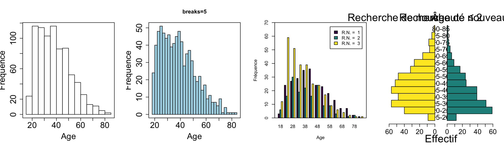60 60 [1] 5.1 4.1 4.1 2.1
Courbes de densité
Principe
Utilise la densité de probabilité = les fréquences relatives d’individus pour une valeur données
Avantages :
l’AUC de chaque courbe = 1 quelque soi l’effectif du groupe
Lissage permet de supprimer l’effet de bord
Paramétrage nécessaire
Noyau = kernel : distribution de référence, normale le plus souvent
Bande passante = bandwith = degré de lissage
Petite bande passante = peu de lissage, courbe “ondulée”
Grande bande passante = plus de lissage, courbe “lisse”
Illustration avec jeu de données R
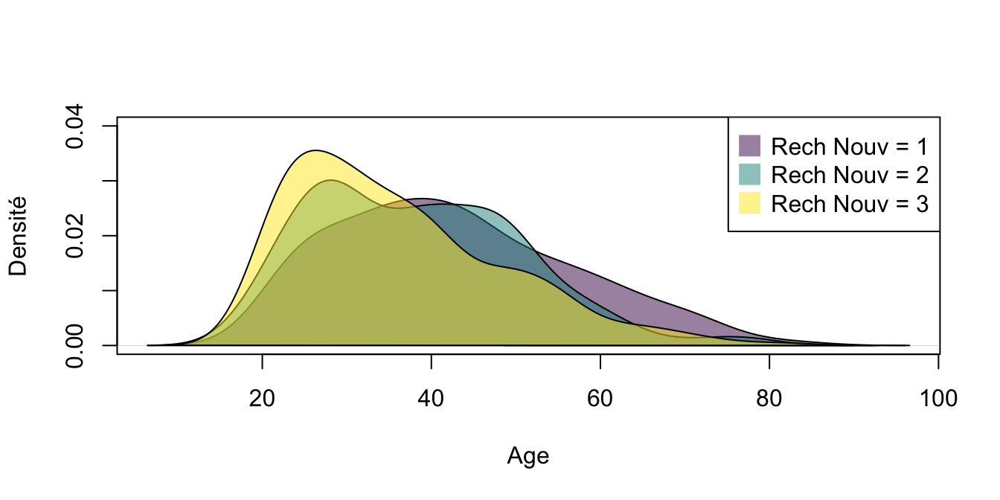
Boîtes à moustaches
Apprécie la distribution d’une variable quantitative.
Différents types :
Box plot de Tukey
Violin plot
Dot plot avec jitter
Box plot de Tukey
5 statistiques clés : min, Q1, médiane, Q3, max
Exclusion des valeurs extrêmes (outliers) au-delà de 1,5 fois l’IQR
Avantages :
Synthétique et intuitif
Utile pour comparer plusieurs groupes
Problèmes :
Absence de standardisation entre logiciels
Perte de détail sur la forme de la distribution
Violin plot
Évolution de la boîte à moustaches pour apprécier aussi la distribution
Intègre une courbe de densité symétrique au sein d’un box plot réduit en taille
Avantages :
Visualisation de la forme de la distribution (modes, asymétries)
Conservation des indicateurs clés (médiane, quartiles)
Dot plot avec jitter
Diagrammes en bandes
Permet de visualiser chaque mesure individuelle avec dispersion horizontale (jitter) pour éviter la superposition
Avantages :
Visualisation fine des données
Identification des valeurs extrêmes et de la densité locale
Complémentaire à la boîte à moustaches
Limites :
Peut devenir illisible avec de grands échantillons
Nécessite un paramétrage du jitter et de la transparence
Exemple des 3 types avec jeu de données R
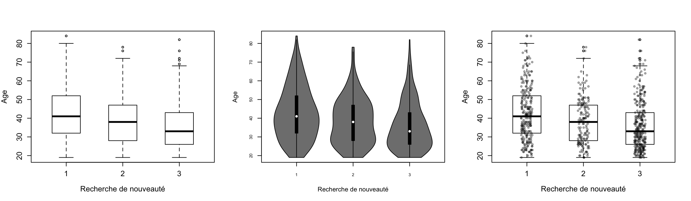
Stripchart
Description
= Diagramme en bande
Représente tous les points individuels sur une ligne verticale, donc nécessite de très petits échantillons.
Utile pour visualiser la distribution brute des données sans agrégation.
Attention à la superposition des points identiques = utilisation de l’option « stack » pour empiler les points ou ajouter du jitter (dispersion horizontale aléatoire).
Si le nombre de sujets augmente, préférer le beeswarm plot qui est une évolution du stripchart avec une disposition plus esthétique des points.
Exemple avec jeu de données R

Bee swarm plot
Description
Permet de visualiser la distribution d’une variable quantitative en représentant chaque mesure individuelle par un point.
Appartient à la famille des dot plots car chaque point correspond à une observation, mais évolution car décale latéralement les points pour éviter la superposition.
Permet de percevoir la densité de la distribution tout en conservant la visualisation de chaque individu.
Permet d’intégrer des informations supplémentaires en colorant les points selon une autre caractéristique.
Exemple avec jeu de données R

Bar plot (variable discrète )
Description
Surtout pour variable discrète (alternative privilégiée à l’histogramme)
Les batons sont disjoints et visuellement séparés par des espaces
Meilleure clarté visuelle.
Permet aussi de voir les variables catégorielles ordonnées ou non ainsi que les données manquantes.
Exemple R
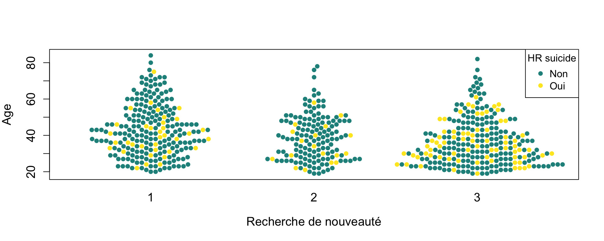
Diagramme quantile-quantile = Q-Q plot (test de normalité)
Description
Outil pour évaluer la distribution d’une variable quantitative et vérifier si elle suit une loi normale.
Représente chaque sujet sur un plan cartésien : ordonnées = valeurs observées (classées par rang), abscisses = quantiles théoriques d’une loi normale.
Interprétation : si la variable suit une loi normale, les points doivent être alignés sur une droite. Un décalage indique une anomalie.
Exemple avec jeu de données R
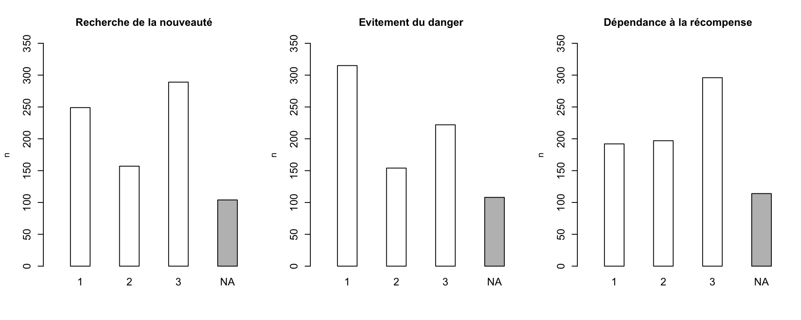
Distribution d’une variable catégorielle
Méthodes possibles
Diagramme en bâtons (bar plot)
Diagramme circulaire / camembert (pie chart)
Diagramme en gauffre (waffle chart)
Carte à cases (tree map)
Nuage de mots (word cloud)
.png)
Diagramme en bâtons (bar plot)
Idem que pour variable discrète
Les batons sont disjoints et visuellement séparés par des espaces
Meilleure clarté visuelle
Diagramme circulaire / camembert (pie chart)
Description
Pas mal pour apprécier la part relative de chaque modalité par rapport à l’ensemble de l’échantillon.
Mais très critiqué car difficile de comparer les surfaces de secteurs circulaires.
Surtout si représentation en perspective (3D) qui accentue les erreurs de perception.
Alternatives : bar plot, diagramme en gaufre, carte à cases, nuage de mots.
Exemple
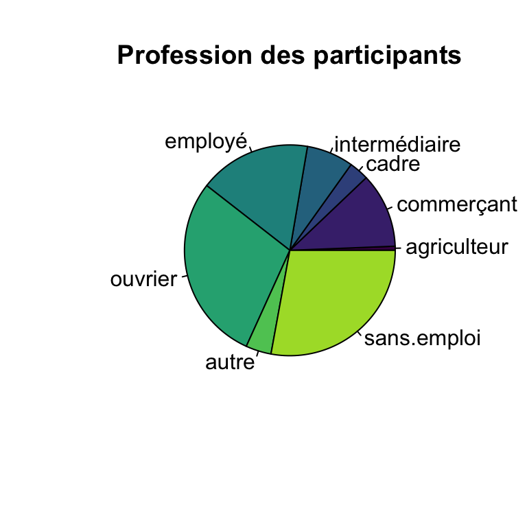
Diagramme en gaufre (waffle chart)
Description
Plutôt de l’infographie que de la statistique scientifique pure.
Même fonction que le camembert : représenter la part de chaque modalité par rapport à l’ensemble.
Évite les biais cognitifs du camembert : le cerveau humain a du mal à comparer des surfaces circulaires ou des angles, mais évalue très bien des surfaces découpées en carrés.
Structure en grille : la distribution est représentée sous forme d’un rectangle composé de petits carrés. Chaque carré représente une unité ou un groupe d’individus (par exemple, chaque carré peut représenter 5 sujets).
Usage :
Dans l’idéal, le nombre de modalités doit être réduit (idéalement inférieur à 5) pour une bonne lisibilité.
Aussi utile pour données dynamiques (évolutions dans le temps).
Exemple R
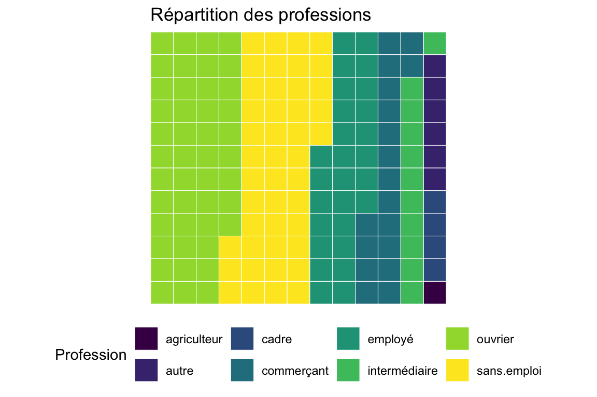
Cartes à cases (tree map)
Description
Entre infographie et statistique.
Représente la distribution des modalités d’une variable catégorielle via des rectangles imbriqués.
Plus utiles quand le nombre de modalités est élevé, rendant les diagrammes en bâtons ou camemberts illisibles.
Limites :
- Difficulté à comparer précisément les tailles des rectangles.
Exemple R
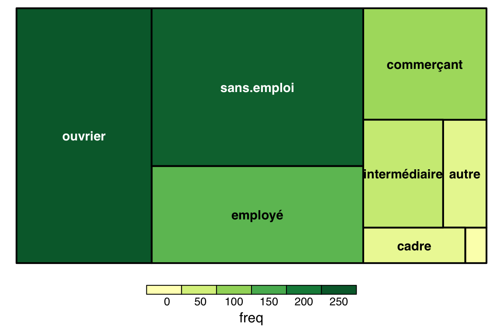
Nuage de mots (word cloud)
Description
Entre infographie et statistique descriptive.
A la base : un outil de traitement automatisé du langage pour visualiser la fréquence des mots dans un texte.
Utilité pour variables catégorielles à forte cardinalité :
Très efficace pour représenter une variable avec un grand nombre de modalités, là où les diagrammes classiques deviennent illisibles.
Utile pour des présentations orales, offrant une vue d’ensemble immédiate.
Limites :
Représentation approximative, jugée très approximative pour une analyse statistique rigoureuse.
Faible intérêt pour des variables avec peu de modalités, où un diagramme en bâtons est plus informatif.
Exemple R

Relation entre deux variables
2 variables quantitatives
Diagramme cartésien (nuage de points = scatter plot) ± vibration des points (jitter)
Régression locale (loess)
Splines
Plusieurs variables catégorielles
Tableau de pourcentage
Cartes à cases (hiérarchie emboîtée)
.png)
Relation entre deux variables quantitatives
Diagramme cartésien (nuage de points = scatter plot)
Description
Représente deux variables quantitative : une en abscisse et une en ordonnée
Montre comment une variable évolue en fonction de l’autre
Problèmes : superposition des points
Solution :
Vibration (= jitter)
Variation de surface : surface proportionnelle à au nombre de sujets
Transparence
Analyse de la forme de la relation :
Droite de régression linéaire
Régression locale (LOESS)
Splines si relation complexe
Exemple R
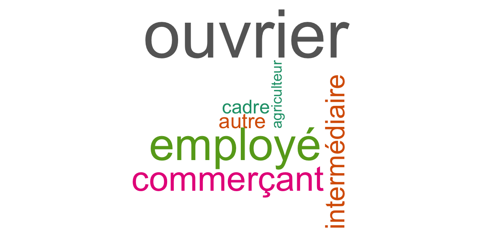
Régression locale (loess) et splines
Description
Régression linéaire : une moyenne globale, droite rigide
Régression locale (LOESS) : moyenne locale, courbe souple donc courbe moins rigide (moyenne mobile généralisée)
- Utilisation : diagrammes en spaghetti (données longitudinales)
Splines : encore moins rigides, courbes polynomiales par morceaux (degré 3)
- Utilisation : identification d’une relation complexe entre deux variables quantitatives (relation polynomiale, périodique, etc.)
Exemple R
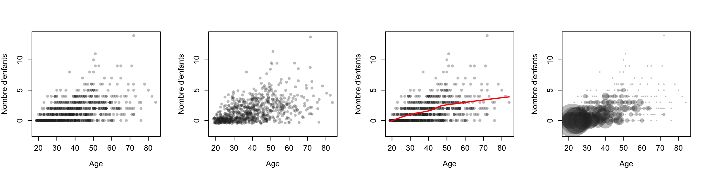
Relation entre plusieurs variables catégorielles
Tableau de pourcentage = tableau de contingence
Description
Tableau de pourcentage = référence incontournable pour analyser la relation entre plusieurs variables catégorielles.
Qualifié de « parent pauvre » des représentations graphiques, car souvent remplacé par des schémas plus complexes sans grand succès.
Plus compliqué si
Multiplicité des variables (plus de deux variables croisées)
Variables emboîtées (hiérarchiquement dépendantes)
Nombre élevé de modalités
Alternatives graphiques : cartes à cases (tree map) avec hiérarchie emboîtée permet de visualiser plusieurs variables catégorielles imbriquées.
Exemple R
| evit.danger |
| |||
|---|---|---|---|---|---|
1 | 2 | 3 | Unknown | Total | |
recherche.nouv | |||||
1 | 125 (50%) | 46 (18%) | 76 (31%) | 2 (0.8%) | 249 (100%) |
2 | 62 (39%) | 64 (41%) | 28 (18%) | 3 (1.9%) | 157 (100%) |
3 | 128 (44%) | 43 (15%) | 116 (40%) | 2 (0.7%) | 289 (100%) |
Unknown | 0 (0%) | 1 (1.0%) | 2 (1.9%) | 101 (97%) | 104 (100%) |
Total | 315 (39%) | 154 (19%) | 222 (28%) | 108 (14%) | 799 (100%) |
Cartes à cases (hiérarchie emboîtée)
Relation entre plusieurs variables catégorielles, surtout avec hiérarchie emboîtée.
Hiérarchie emboitée : variables imbriquées selon un ordre hiérarchique (A > B > C).
D’autant plus si grand nombre de modalités de réponse.
Avantages :
Visualisation claire de la répartition des modalités.
Permet d’identifier rapidement les combinaisons les plus fréquentes.
Limites :
Difficulté à comparer précisément les tailles des rectangles.
Peut devenir illisible si trop de niveaux hiérarchiques ou de modalités.
Exemple R

Données longitudinales
Données recueillies à plusieurs moments dans le temps
Représentations graphiques spécifiques
Courbes moyennes (mean plots)
Diagrammes en spaghetti (spaghetti plots)
Diagrammes en lasagnes = heatmaps temporelles
.png)
Courbes moyennes (mean plots)
Description
Permet d’évaluer la tendance générale
Globalement : box plot ou violin plot à chaque point de mesure dans le temps
Même problèmes que pour les box plot :
Pas de standardisation entre logiciels
Perte de détail sur la forme de la distribution sauf si violin plot
Pas d’info sur la gestion des outliers et des bornes. Écart-type ? IQR ?
Exemple R
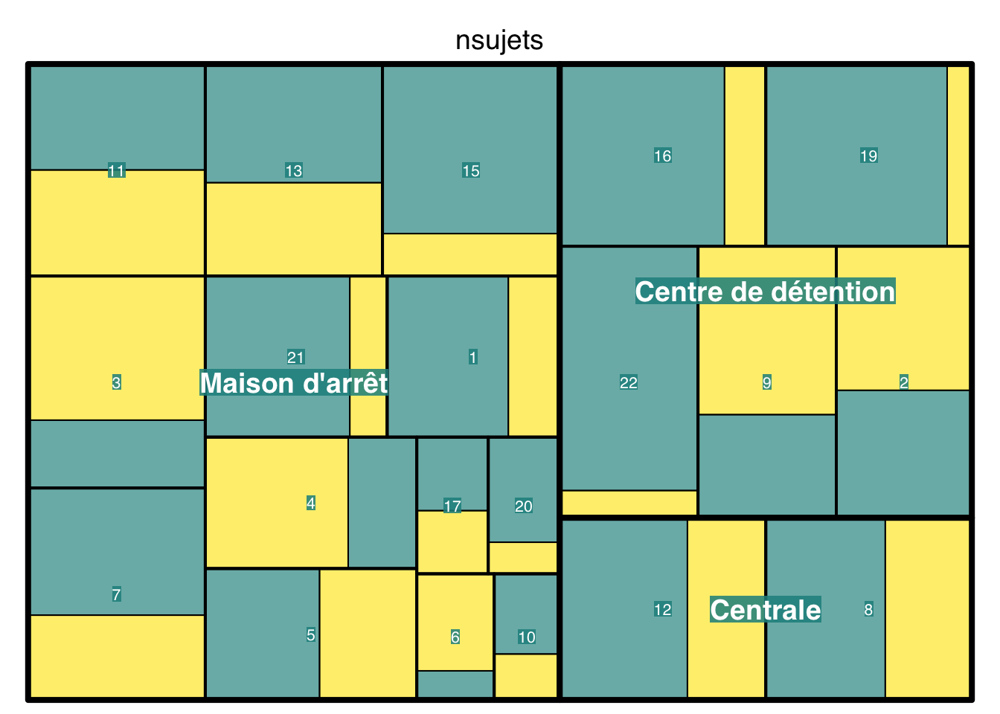
Diagrammes en spaghetti (spaghetti plots)
Description
= Diagramme en fagot
Représente l’intégralité des trajectoires individuelles
Nécessite un échantillon limité (quelques centaines de sujets au plus)
Problème de lisibilité : accumulation de lignes
Solution 1 : transparence
Solution 2 : superposition de courbes de régression locale (LOESS)
Exemple R
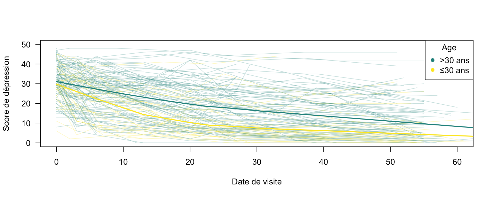
Diagrammes en lasagnes = heatmaps temporelles
Description
Heatmap temporelle :
Axe horizontal = temps (visites)
Axe vertical = sujets individuels
Codage par couleur :
Variable quantitative = dégradé de couleurs
Variable qualitative = couleur distincte par modalité
Avantages :
Lisibilité améliorée par rapport au diagramme en spaghetti
Permet d’identifier des trajectoires homogènes
Visualisation de l’attrition (données manquantes)
Nécessite une préparation rigoureuse des données (format large, gestion des valeurs manquantes)
Exemple R

Données multidimensionnelles
Données avec plusieurs variables étudiées simultanément
Essentielles pour générer des “intuitions” et regarder attentivement la structure ds données

Analyse en composantes principales (ACP) et représentation sphérique
Description
Il faut au moins une dizaine de variables numériques. (intérêt limité < 5 variables mais au delà de 20 variables, c’est illisible et peu informatif).
Pour une matrice de corrélation de grand dimension, il vaut mieux une heatmap ou un
corrplot().Interprétation :
Forte corrélation : variables proches les unes des autres
Indépendance : variables formant un angle d’environ 90° sur la sphère
Corrélation négative : angle supérieur à 90°
Pas mal en psychométrie pour vérifier la validité des questionnaires (items d’une même dimension doivent se regrouper visuellement).
Exemple R
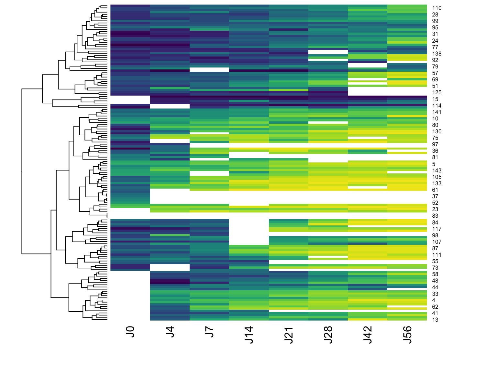
Représentation en réseau (network graph)
Description
Permet de visualiser les relations entre de nombreuses variables simultanément.
Utile pour explorer la structure des données multidimensionnelles complexes.
3 conditions pour son utilisation optimale :
Nombre élevé de variables (>20).
Présence de regroupements (clusters) dans les données.
Besoin d’une représentation schématique plutôt que mathématiquement précise.
Interprétation :
Les variables sont reliées par des traits (arêtes) dont l’épaisseur est proportionnelle à la force de leur corrélation.
Noyau central de variables fortement liées, entouré de strates périphériques plus indépendantes.
Complémentaire à l’analyse factorielle pour comprendre la structure dimensionnelle.
# | fig-height: 6
#| fig-width: 6
#| echo: false
#| results: 'asis'
#| message: false
#| warnings: false
library(qgraph)
noms <- names(rush[,3:28])
qgraph(cor(rush[,3:28], use="complete.obs"), minimum = 0.25, borders = FALSE, vsize = 4, layout="spring",labels=noms, label.cex=4, label.scale.equal=TRUE,edge.color=rgb(0,0.5,0.5),edge.width=0.5)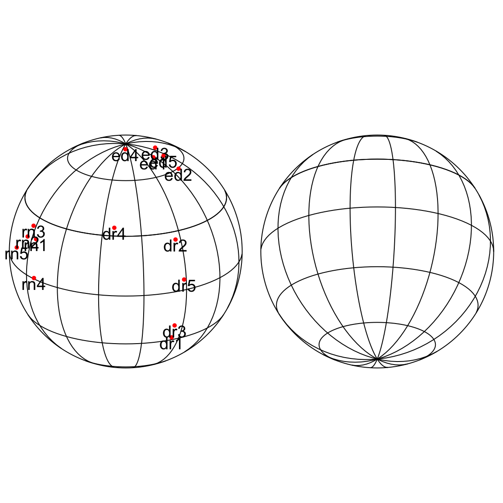
Comment les utiliser ?
Intérêt
Outils d’inférence : passer de ce qui est observé sur un échantillon à une affirmation sur une population plus large
Langage commun de la communauté scientifique
Légitimité
Usage légitime si répond à une question scientifique précise, formulée a priori
Usage illégitime si utilisé pour “fouiller” les données à la recherche d’effets significatifs :
Test de normalité (Shapiro-Wilk, Kolmogorov-Smirnov, etc.) sur chaque variable
Tester les caractristiques des perdus de vue…
Donc n’est pas un substitut au raisonnement scientifique